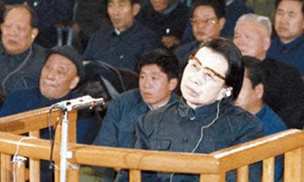

有沒有江青法庭影片全片，油管上的《九億人民的審判》並不完整。
如法官朱在喜的：“江青你是地主爺！太上皇！……不許你說，你說就是你錯！……住口！”
歷史正文：“叫孫悟空來要我多長幾個腦袋砍掉就是了嗎？”
歷史正文：“我跟你讲过了，我很尊重执行毛泽东主席的正确的方针的最高人民法庭，但是不执行了， 我就是「和尚打着伞，无法无天」”
這是一個比較完整的文字記載：https://chinadigitaltimes.net/chinese/172259.html
不完整的記載：https://m.mysmth.net/article/MarxistEconomics/8001
这时，江青站起来，她把一张纸扬了扬说：“我写了一点看法，念一念行吗？”
审判长同意，江青有板有眼地念道：“《我的一点看法》一张起诉报告，满纸胡说八道。要为真理斗争，我的声明如下：
项庄舞剑，意在沛公。
投降叛变，授人以柄。
要害问题，两个纲领。
以阶级斗争为纲，纲举目张，继续革命。
以三项指示为纲，以目混纲，修正反动。
穷凶极恶，大现原形。
掩盖罪恶，画皮美容。
树立威信，欺世盗名。
标新立异，妖言惑众。
弥天大谎，遮瞒真情。
偷天换日伎俩，上下其手劣行。
张冠李戴，移花接木，暗中嫁祸他人。
转移人民视线，妄图洗刷臭名。
创造世界历史的动力，乃是人民大众英雄。”
（江青说：）“我对他（公诉人江文）的意见，也就是刚才所讲的《起诉书》的那一套，整个地说，就是：颠倒是非，混淆黑白，歪曲、篡改历史，隐瞒捏造事实。你们说了我那么多罪名，没有一件能站得住脚。远的不说，那就更说不清了。就从一九六六年五月十六日以来，也就是中共中央通过重要的通知，发动文化大革命以来，到毛泽东主席逝世，我没有什么自己的纲领，我所做的每一件事情，都是执行捍卫以毛主席为首的党中央的指示和政策的，是执行毛主席为代表的无产阶级革命路线的。你们逮捕审判我，这是丑化毛泽东主席。审判我就是丑化亿万人民，丑化亿万人民参加的无产阶级文化大革命。
“你们审判我就会使‘文化大革命’中的‘红卫兵’和‘红小兵’抬不起头来。”
（江青的发言被打断。后又接着说：）“我是执行捍卫毛主席的无产阶级革命路线的。”
“我现在是为捍卫无产阶级文化大革命尽我的所能。你们承认不承认九大和十大？如果不承认，就是离开重大历史背景，隐瞒重大历史事件！”
（江青的发言又被打断。然后，她继续说：）“我和毛主席结婚已经三十八年了，我怎么能够反对毛主席呢？当初华国锋抓我的时候就捏造了许多谣言，这些东西现在提都不提了。为什么？不敢见人嘛。你们捏造的这些东西和国民党当年对我的丑化和攻击有何不同？我和毛主席的感情是用历史来证明的。战争年代撤离延安的时候，留在前线追随毛主席的女同志唯有我一个，你们都躲到哪里去了？！”
（江青的发言被打断后接着说：）“你们的起诉书把林彪这个要杀死我的人，作为我这个所谓集团的成员，怎么能把谋害人的和被谋害的搞在一起？说以江青为首的搞这个阴谋活动？然后罗列一些种种莫须有的罪名强加于我，十足地暴露出你们的无耻和卑鄙。通篇的文字，绝大多数是造谣嘛。比如说，你们的材料里说我说过邓小平是汉奸，汉奸这个罪名要有事实呀，我没有材料说他是汉奸呀。我什么时候说过这句话来呢？没有，我从来就没有说过。就是又造谣嘛。不错，我和邓小平之间有斗争，我从来不否认这一点，但是我没有说的话怎么能承认呢？还有，我对时传祥这个人根本不认识，也从来没有听说过这个人，我怎么会说他是什么工贼呢？这一些事实就说明了，这个起诉书采用了没有的给我捏造，小事情给我夸大，别人的加在我头上。用这样的方法来制造了这起大大的冤案。你们开了这个头，好，后人就会群起而效之，你们将来也逃脱不了这样的下场就是现在不会这样，将来也免不了这样，这是你们首先挑起来的。”
（此处江青的发言被打断。然后，她继续说：）“我同林彪是有你死我活的斗争的，我和这个卖国贼斗争的时候，你们还不知道在哪里呢！林彪和刘少奇一样，都是要篡夺党和国家的最高领导权的，都是把亲手把他们提拔起来的毛泽东视为眼中钉、肉中刺，迫不及待地企图取而代之。我作为毛泽东的妻子和战友，为捍卫党的原则，和保卫毛主席的安全，我挺身而出是自然的。党中央授予我一定的领导权后，我始终就在这个权力的范围内进行我的工作，这怎么能说我是非法的呢？这样说，你们把以毛主席为首的党中央究竟置于何地？你们究竟还承认不承认九大和十大通过的政治报告和党中央的一系列的重要文件和毛泽东同志、周恩来同志的讲话和批示？你们根据什么，竟能得出结论说什么有的人是犯了错误，有的人是有意要推翻无产阶级政权？难道毛主席亲自发动，亿万人民积极参加的无产阶级文化大革命是为了推翻什么阶级专政、夺取什么政权吗？这真是一个荒谬不堪的论点，是一个简直叫人难以置信的诬蔑和构陷。你们这样说，就等于把全国人民的意志都强奸了。我所干的这一切，邓小平、华国锋，包括你们现在在台上的绝大多数人都曾经异口同声地拥护过，参加过，你们又怎样解释你们当年的行为呢？”
（江青的发言再次被打断。然后她接着说：）“毛主席早就对我说过，要警惕刘少奇、邓小平、陆定一、杨尚昆以及周扬、田汉、廖沫沙等人的翻案活动，他们肯定是要翻案的，这是一条不以人们的意志为转移的客观规律。这一条预见，由于华国锋这个坏家伙和叛徒的出卖而成为现实。你们暂时地得逞了。但是，有一点我要告诉你们，你们不要高兴得太早了。中国是经过无产阶级文化大革命和毛泽东思想熏陶的，人民是经过锻炼的，你们这些修正主义分子，人民将来是不会放过的，我也在这里要告诉你们……”。
（江青的发言又一次被打断。后来继续说：）“林彪指使叶群和他们的小分队去抄郑君里、赵丹他们家的事情，我回顾了很久，这是林彪的罪恶和阴谋的一部分，郑君里和赵丹的死，我是在这里才听说的，你们把这些强加在我的头上，难道不是和林彪一样地对我的迫害吗？吴法宪那个王八蛋是他的走狗，他的话怎么能作为凭据呢？他早就对我和张春桥恨得咬牙切齿，这是人所共知的。我再在这里申明一遍，林彪和他的小分队对郑君里和赵丹以及对秦桂贞的事情，和我没有任何的关系，你们也拿不出像样的证据来。我倒是怀疑，你们已经和吴法宪这类人串通好了，有意要陷害我，不然，为什么你们至今不让我和郑君里家里的人好好地对质一下事情的经过。你们这样做，就是要造成一种效果，好像我江某人在三十年代干了什么见不得人的事情。现在你们把要说的话都说出来嘛，我究竟有什么样的把柄篡在你们手里呢？没有，没有，根本没有。江某人在三十年代的所作所为是光明正大的。你们做出了林彪要做而没
道的林彪的同伙呢。其实，毛主席发动批邓、反击右倾翻案风的时候，就是把他们结合起来批的，只不过你们要把林彪的设想变成现实罢了。”
（江青的发言被打断之后继续说：）“你们所说的那个所谓诬陷八届中央委员、候补中央委员的事情，简直是有史以来的奇谈怪论。文化大革命中，群众对各级机关和部门的领导人提了很多的问题，揭发出许多历史上的丑行，我作为中央文革小组的第一副组长，向康老要一个有问题的人的名单，就成了所谓的诬陷的证据。难道说，革命群众揭发的那些问题，都是我江某人炮制出来的吗？
难道说庐山会议上对彭德怀等人的揭发材料，也是我江某人策划搞的吗？明明是党中央给他们定的案子，我看了材料给人们讲一讲，就成了我江某人的诬陷，这能说服历史和后人吗？我这里还只是说就算你们所说的材料是假的这个前提上，更何况党中央整理他的每份材料和定的案子都是正确的呢。照你们说来，文化大革命十年来，亿万人民群众参加的这场运动中，所有揭发出来的走资派和叛徒、特务以及一切牛鬼蛇神等等，统统都是假的，统统都是冤案、假案、错案，都是我江某人策划的，这可能吗？这岂不把你们的能力和才华都抹杀了吗？我江某人真要有这么大的本事，我怎么会坐到这个被告席上来呢？我这样一讲，可能人民群众就能看清事实了，你们这个特别法庭搞的这一切，就是一个有组织、有计划地精心制造出来的大冤案。你们所采取的手段，就是攻其一点不及其余，然后扩大范围，把我搞臭。天地良心，你们的良心哪里去了？我还是毛泽东的妻子，你们就敢于如此，可见王洪文为什么到了法庭，到了这个地方吓得连话都说不出来了。”
（江青的发言又被打断了。后来继续说：）“刘少奇的叛徒材料，是他自己三次被捕坐监所写出来的，难道是我编造的吗？他是怎样出狱的，连延安整风的时候，你们现在的中央里的人都提出过怀疑，还有揭发，就是因为证据不够，毛主席没有把这个问题提到桌面上来，而且刘少奇还受到重用。直到这次文化大革命中红卫兵小将和革命派揭发出来他们大批这样的问题，才进一步引起了毛泽东主席和党中央的高度重视，这才经过中央政治局扩大会议研究和批准，成立了中央专案组。这个专案组所有的中央领导同志和中央文革小组都参加了，所有的材料都是集体审定和共同研究的，你们仅仅抓住我批准他们拘留了几个人的报告，就断定刘少奇的专案是我江某一个人制造出来的，是不是编造得太离奇了吧？是不是难以让历史和后人所接受呢？除非你们和当时的中央是木偶人，否则这一套就是荒谬的，站不脚的。
“关于这个问题（刘少奇一案），我的意见已经说过多次了，你们爱怎么（定）罪就怎么定（罪）吧，这个我也没什么。你们现在翻刘少奇的案，翻彭真的案，都是反对周总理，反对康老，都是反对毛主席，反对文化大革命。全国人民能答应你们吗？
“我现在还有一个问题，就是要向毛主席负责。现在整的是毛主席。我的家乡有句老百姓的话：‘打狗看主面’，就是说打狗呵，还要看主人的面子。现在就是打主人。我就是毛主席的一条狗。为了毛
主席，我不怕你们打。在毛主席的政治棋盘上，虽然我不过是一个卒子，不过，我
是一个过了河的卒子。
“我认为我是‘造反有理’，‘革命无罪’。过去我经常说：革命要有‘五不怕’：一不怕杀头；二不怕坐牢；三不怕撤销党内外一切职务；四不怕开除党籍；五不怕老婆离婚。这第五条对于我不成问题了，二、三、四条已经三年多了，我经受了，第一条杀头，我久候了！”
清君之侧，目的在“君”。罗织陷害，血口喷人。利用专政，搞法西斯。精神虐待，一言难尽。破坏政策，凶悍残暴。造反有理，革命无罪。杀我灭口，光荣之甚。
（最后，江青大声地说：）“这就是我的回答！”
https://www.kuaihz.com/tid5/tid475_492264.html
本文摘自《“四人帮”兴亡》，叶永烈 著，人民日报出版社出版
1980年12月24日，法庭进行辩论。她知道，按照《刑事诉讼法》第一百一十八条规定，作为被告人可以在法庭上为自己作辩护发言，江青早就作了准备。
她的“宣言”是什么样的呢？
起初，她想写一首长诗，一首比文天祥的《正气歌》更加“雄壮”、更加“磅礴”的长诗。她曾向监狱当局要了《文天祥集》，要了《辞海》。不知道是因为她已经没有“激情”，还是本来就缺乏“诗才”，折腾了三天，“新正气歌”没有写出来。
她又说要学屈原的《楚辞》，依然没写出什么“留存千古”、“映照青史”的“史诗”来！
1979年11月至1980年5月，江青写了份长达三十四页的“交待材料”，题为《我的抗议与更正》，详尽描述了她在文化大革命中的“光辉斗争历程”，如“我同刘少奇的斗争”，“我同林彪的斗争”，“我同邓小平的斗争”，并历数了她的这些“斗争”如何得到毛泽东、周恩来的支持与赞许。
江青为自己辩护时宣读了这份“交待材料”。另外，她还“精心”写了《我的一点意见》。
1980年12月24日上午九时整，值庭法警拉响了开庭铃。
特别法庭庭长江华、副庭长兼第一审判长和十七名审判员出庭。曾汉周主持法庭辩论。
出庭的检察人员有特别检察厅厅长黄火青、副厅长喻屏和五名检察员。
曾汉周：“传被告人江青到庭。”
曾汉周宣布： “最高人民检察院特别检察厅指控被告人江青的犯罪事实，本庭于11月26日、12月3日、5日、9日、12日和23日上午，先后六次开庭，现在进行法庭辩论。”
检察员江文：“审判长、各位审判员，公诉人请求发言。”
曾汉周：“公诉人可以发言。”
江文：“被告人江青在‘文化大革命’期间所犯的篡党篡国，推翻无产阶级专政政权的罪行，经过六次法庭调查，对被告人进行审问，出示和宣读了证据、证言，听取证人出庭作证，播放了江青的讲话录音，完全证实了特别检察厅对江青反革命罪行的控告是确凿无疑的。江青是林彪、江青反革命集团的主犯，是‘四人帮’反革命集团的头子。现在，经过调查可以确定她的主要罪行是：第一，她伙同康生、谢富治等人诬陷迫害中华人民共和国主席刘少奇，制造了全国最大的冤案。第二，江青肆意点名诬陷大批党政军领导干部和群众。第三，在‘文化大革命’期间江青勾结林彪进行了大量的反革命活动。大量的事实证明，在林彪反革命集团被粉碎以后，以江青为首的‘四人帮’反革命集团继承了林彪的衣钵，继续进行篡党篡国，推翻无产阶级专政的反革命勾当……江青触犯了中华人民共和国刑法第九十二条、第九十八条、第一百四十四条，构成了组织领导反革命集团罪，阴谋颠覆政府罪，反革命宣传鼓动罪，非法拘禁罪。对国家和人民危害特别严重，情节特别恶劣，应该根据刑法第一百零三条从重判处。
“在这里还需特别指出的是，江青在法庭调查时拒不认罪，公然多次继续诬蔑国家领导人，攻击诬蔑法庭和法庭工作人员，肆意扰乱法庭秩序，已构成继续犯罪行为。请法庭在量刑时从严判处。我的发言完了。”
曾汉周：“被告人江青，根据《中华人民共和国刑事诉讼法》第一百一十八条的规定，你有陈述和辩护的权利，你还有最后陈述的权利。”
江青：“那就请你们按你们的那个根据去定罪吧，我听候你们的审判。有本事你们把我弄到天安门广场公审、枪毙！”
曾汉周：“是不是枪毙你，法庭将根据你的犯罪事实依照法律判决。”
江青：“你不要装腔作势演戏了。没有我这个道具，你这场戏就演不成呵！你要有胆量就把你的后台导演请出来。我要和他当面对质。”
曾汉周：“我警告你！不许你谩骂法律……” 江青：“我无法无天，我不怕你呀！刘少奇、林彪我都没怕过，我能怕你吗？”
曾汉周：“法庭调查了大量事实，给了你充分的辩护时间，你反而利用法庭进行反革命宣传。……”
江青：“你才是反革命哪！……”
曾汉周：“你侮辱法庭，这就构成了新的犯罪……”
歷史正文：“叫孫悟空來要我多長幾個腦袋砍掉就是了嗎？”
錯誤文本：江青：“大不了杀头。我是孙悟空，我能变几个脑袋，你多砍几个，我多长几个……”
曾汉周(按铃警告)：“你再扰乱法庭，就取消你的辩护权利。”
江青：“对不起，我可以方便一下吗？”
曾汉周：“带被告人退庭方便。”
江青(站起身)：“算了，我不去了，我要念一念《我的一点看法》，你不反对吧？”
曾汉周：“你可以念。”
于是，江青拿起了两页纸，站起来宣读《我的一点看法》。那标题，似乎还算“谦虚”，只是“一点看法”而已。据说，那是因为她要学习毛泽东──在中共九届二中全会上，毛泽东只写了一篇八百多字的《我的一点意见》，就把陈伯达打倒了。如今，她写的《我的一点看法》，总共不到两页，用钢笔竖写，还没有八百字哩！不过，她的“诗一般的语言”，充满火药味，是“浓缩的精品”：
“项庄舞剑，意在沛公。”投降叛变，授人以柄。
要害问题，两个纲领：
以阶级斗争为纲，纲举目张，继续革命；
以三项指示为纲，以目混纲，修正反党。
穷凶极恶，大现原形。
掩盖罪恶，画皮美容。
树立威信，欺世盗名。
标新立异，妖言惑众。
弥天大谎，遮瞒真情。
偷天换日伎俩，上下其手劣行。
张冠李戴──强加，移花接木──暗中；
转移人民视线，栽赃嫁祸他人。无耻吹捧自己，妄图洗刷臭名；
罗织诬陷中央文革，迫害灭口有关知情；
双手难掩天下耳目，修正主义螳臂之辈。
创造世界历史的动力，乃是人民大众英雄。
1979年10月26日稿
1979年11月8日交侦查审讯员(两页)
此稿略有修改，1980年10月9日于秦城监狱
江青读毕，接着说道：
“要为真理斗争，我的声明如下：你们借助国家名义，拼凑了一个什么特别法庭，给我罗织了一大堆罪名，这些罪名一条也不能成立。我过去的一切都是根据中央的指示做的，我在工作中有错误，有偏差，但绝不是犯罪。……
“古代有‘项庄舞剑，意在沛公’，你们搞的就是这个伎俩。
“现在你们逮捕我、审判我，就是要丑化毛泽东主席，就是要把文化大革命中的红卫兵和红小兵压得抬不起头来，就是要为刘少奇翻案。
“关于这个问题(刘少奇一案)，我的意见已经说过多次了，你们爱怎么(定)罪就怎么定(罪)吧，这个我也没什么。你们现在翻刘少奇的案，翻彭真的案，都是反对周总理，反对康老，都是反对毛主席，反对文化大革命。全国人民能答应你们吗？……
https://groups.google.com/g/gdzh/c/Q14nC-qGHpA?pli=1
《关于“江青对抗法庭，拒不认罪”的资料辑录》
一、关于审判江青的报道版本之一：《神秘的秦城监狱》（节录）
来源：《文史精华》2006年10月版 作者：上海市高级人民法院王文正（回忆）整理：常州市文联副主席沈国凡
1980年7月16日，也就是我到达北京的第二天上午，最高人民法院的一辆轿车开到国务院第二招待所，车上走下来一位年轻人，将我接上了轿
车。
轿车沿着北京宽阔的街道，向着西北方向飞驰。从车窗向外看去，北京已从“四人帮”的桎梏中解放出来，昔日铺天盖地的大字报巳被欢庆胜利的大红标
语所代替，人们的脸上有了笑容，街头上摆小摊的人开始多了起来，许多学生和青年工人手中拿着书本，正在匆匆忙忙地赶路……看到这一切，我顿时感到自己肩
上的重任，心情一时难以平静。
通过车上的相互交谈，我认识了这位前来接我的年轻人名叫杨富年，湖北人，毕业于北京政法学院，在最高人民法院刑二庭担任书记员（特别法庭成立后
担任第一审判庭书记员）。
1，一个神秘的地方
10时左右轿车到达位于北京郊外的秦城监狱。
我环顾了一下四周。只见这座位于燕山南麓的监狱，除了朝南的方向是一马平川之外，三面全是险峰峻 岭，连绵相接，如同一把钳子，将这山下的监狱
牢牢地钳住。山岭上树木葱郁，隐约可见古长城的断壁残垣，蛇形般绕着山岭。北面山顶的最高处有一个三角点，不知是做什么用的。
建国后我随部队南下，曾在上海市公安局于过一段时间的公安工作，早已知道这座监狱，但这次却是平生第一次走近它。面对着眼前那隔断人世的高墙，
当时的心情很复杂，因为这是一座特殊的监狱，在“文化大革命”中，这里一共关押了500多名党和国家的各级领导干部以及各行各业的“反动学术权威”，有
的在这里被关押10年之久。以后我看到狱监方面整理的一份材料，在对待被关押的老干部时，名义上是“关心生活”，实际上炒鸡蛋时连蛋壳都炒在里面，致使
这些老人无法吃菜，只能啃点窝窝头充饥，还有的在这里被迫害而死，文革中这是一座令人不寒而栗的法西斯集中营。
这座监狱位于北京西北郊的昌平县（现昌平区）境内，因为建在秦城，所以称秦城监狱。这座建于1958年的秘密监狱，此前归公安部管辖，主要是关
押国民党重要战犯、美蒋特务和重大案件的案犯。当时有4个监区，400间监房，各种与此相配套的设施也一应俱全。到了1968年，看着一批批被迫害
的“牛鬼蛇神’’无处关押，林彪、“四人帮”便在这里大兴土木，加建了两个监区，400间监房，将这座位于北京西北郊的监狱建成了一座特级监狱，成了林
彪、“四人帮”残酷迫害民族精英们的一座“据点”。林彪、江青反革命集团对人民群众和各级干部、知识分子残酷迫害，无情打击，冤狱遍于神州，秦城监狱扩
建成特级监狱便是一个缩影。
2，“四人帮”被押入秦城监狱的经过
历史给林彪、江青一伙开了一个不小的“玩笑”。“四人帮”怎么也没有想到，他们扩建的这座用来迫害广大干部群众的特级监狱，竞成了最终关押自己
的地方。
关于江青被捕时的情况，人们有着各种不同的说法。
有人说负责执行任务的张耀祠是提着手枪冲进去的；有人说当时江青听到宣布后，就倒在地上打滚，不肯站起来；有的说江青想反抗，同时还指责去抓她
的人。更有的书刊上将此事描写得如同传奇一般，说是江青听完中共中央办公厅副主任张耀祠的宣读后，“忽”地跳下床，手指办公厅副主任，横眉瞪眼骂
道：“滚!你给我滚出去!警卫员!来人哪!快来人哪!”接着江青又指责这是在“搞阴谋，搞政变”，并反身抓起床头的一只瓷瓶，奋力朝办公厅副主任张耀祠
砸去。张耀祠闪身躲过，猛扑过去一把将她抱住……
据我参加对于“四人帮”审判前后所了解到的情况和看到的材料，实情是这样的：
1976年10月68晚上8时30分，负责抓捕江青的中共中央办公厅副主任张耀祠，首先去抓的不是江青，而是毛远新。张耀祠穿便服，没有带手
枪。行动小组的人员穿军装，但也都没有带任何武器。张耀祠来到毛远新那里，向他宣布：根据中共中央决定，对他实行“保护审查”。
请注意，这里用的不是“隔离审查”，因为当时在决定抓捕“四人帮”时，也同时决定必须抓捕毛远新，但他与“四人帮”又有区别。张耀桐命令毛远新
交出手枪。毛远新根本不听，拒绝交枪，并大声地吼着：“主席尸骨未寒……”
这时，张耀祠身后的行动小组人员上前，迅速收缴了毛远新的手枪，并将他押走。1986年3月，中国人民解放军军事法庭判处毛远新有期徒刑17
年。
接着，张耀祠仅带着行动小组3名人员，来到江青所住的万字廊201号住处。
由于张耀祠多年来一直负责中南海的安全警卫工作，警卫人员一般都同他很熟，当他出现在江青的住处 时，两位警卫人员并没有阻拦他。张耀祠就命令
行动小组人员缴了两名警卫员的枪。这突然的行动，使两个警卫员不知发生了什么，就笑着问：“张主任，这是怎么回事呀？”
江青吃完晚饭后坐在沙发上，见张耀祠进来，只朝他点点头。毛泽东主席生病期间，张耀祠是经常来这里的，这次江青没有想到的是，张耀祠站在她的面
前，很严肃地向她说了一段令她吃惊的话。
张耀祠说：“江青，我接华国锋总理电话指示，党中央决定将你隔离审查，到另一个地方去，马上执行！”
此时的江青并没有大吵大闹，也没有向张耀祠扔瓷器，而是仍坐在沙发上，双目怒视着张耀祠，然后才慢慢地站起来，板着一张脸，从腰上取下一串钥
匙，轻轻地扭开保险柜，从里面取出一个同志亲启”几个字。也将钥匙放在信封里面，才将信封用封条封好，交到张耀桐的手里。
从这些行动似乎可以看得出来，江青对于这一天是有了一定准备的。
江青被押送到中南海一个秘密的地下室时，坐的仍然是自己过去的驾驶员开的那辆轿车。江青并没有作任何的反抗，她显得很平静。震惊中外的抓捕江青
的行动，就是这样平谈，这样毫无一点惊心动魄之处。
运送“四人帮”到秦城监狱的秘密行动，是在1977年4月9日零点开始的。
自1976年10月6日晚8时“四人帮”被抓获之后，他们一直被隔离在由8341部队管辖的同一地下工程的不同区段。随着案件的进展，大量证据
说明，“四人帮”一伙是一个阴谋篡夺党和国家最高权力的反革命集团，决定移交国家司法机关严惩。在对其进行审讯前，由8341部队交公安部秦城监狱关
押。
为了做到万无一失，部队事先了解了地形，认为秦城附近大都是起伏的丘陵，少桥梁和涵洞，有利于夜间行车。从时间上计算，从中南海到秦城，汽车中
速行驶，单程需1小时10分，这样分两天时间，来往4趟，到当天的天亮可以完成预定任务。
那天深夜，一切都在秘密中进行。
第一个被押送的是王洪文。
王洪文被铐上手铐，押上防弹车坐在司机后排的中间。左右坐着的霍际龙和吴兴禄，就是粉碎“四人帮”的当晚抓他的两个人，他们可说是“老相
识”了，二排坐着两个手持冲锋枪的队员，押送组的组长李广银坐在司机旁边。两辆警车，将这辆防弹车夹在中间，上面坐着全副武装处于临战状态的行动队
员。
这次行车路线是：从中南海东门至德胜门，经沙河镇拐弯，到9日1时10分到达秦城监狱。立即办理各种手续，移交王洪文随身所带杂物，王洪文被带
至牢房，换上号衣。
第二个被押送的是张春桥。
进王洪文的车回到中南海时是9日凌晨3时，张春桥被铐上双手押上车，同样经过一小时左右到达秦城监狱。
第二天，也就是1977年4月10日凌晨零点，开始押送江青。
行动组长高云江和队员在上车之前，拿出手铐对她说：“今天要换个地方，戴上这个吧。”江青听后没有吭声，然后缓缓地走进了洗手间，上完厕所以
后，不慌不忙地站在镜子前，慢慢地梳着她的头发。江青的头发，就是到了这个时候也还是油光乌黑的。行动队员们耐心地等待着她办完这些事情，等她出来的时
候，便将手铐伸了过去。江青此刻也未作任何的反抗，顺从地戴上了手铐，接着就被带上了车。负责监管江青的女同志陈世冠坐在前车上，江青原来的护士马晓先
坐在二排副座上。到秦城监狱的时候，前面站了许多人。这些人有的是监狱的工作人员，也有的是专门来看热闹的，很多人都想在这里看一看江青的“尊容”，看
一看这个茬文革中闹得全国上下都不得安宁的“红都女皇”的下场。
江青下车后伸着两只戴着手铐的手，抬着头，就直朝里面走，脚步走得很快。两个女狱警将她带到牢房里。这是秦城监狱里一流的一间牢房，里面房间较
大，有抽水马桶，其他卫生设施也很齐全，通风、采光都很好。接着，马晓先、陈世冠向监狱长和女狱警介绍了江青近期的饮食、睡眠及各种情况，将江青的衣物
进行了交接。女狱警很快就给江青换上了犯人穿的号衣。从此这位“红都女皇”便在这里开始了她的铁窗生涯。
姚文元是最后一个被押送的，一路同样顺利。
1977年4月10日5时，在8341部队隔离监护达187天的“四人帮”，被全部准时地移交秦城监狱关押。
后来有很多熟人问我，“四人帮”被关在了秦城监狱，而陈伯达呢，此时为什么不将他也关到秦城监狱?我说，陈伯达由于身体的原因，这时住在北京复
兴路的公安部医院里，本着人道主义的原则，得事先给他看好病。
1980年11月10日，特别法庭派书记员到秦城监狱将《起诉书》副本，分别送达被告人江青、张春桥、姚文元、王洪文、陈伯达、黄永胜、吴法
宪、李作鹏、邱会作、江腾蛟。
并告知他们，依据《中华人民共和国刑事诉讼法》第26条的规定，被告人有辩护权，还可以委托律师辩护。
我在隔壁的闭路电视上看到，当书记员叫江青在收到起诉书副本的送达证上签字时，江青竟将日期写成了“一十月”。当书记员给她指出时，她看了看后
自己也觉得好笑，冷冷地笑了两声，然后用笔将写错的日期改成了“十一月”。
3，江青在狱中所写《我的一点意见》及受审
1979年11月，江青眼看着自己出狱的希望越来越渺茫，于是每天就开始写她的“交代材料”，她给这份“交代材料”取了一个标题，名叫《我的抗
议与更正》。
1980年5月，江青终于完成了她的这篇“巨著”，总计34页。主要内容是写了“我同刘少奇的斗争”，“我同林彪的斗争”，“我同邓小平的斗
争”以及她在“文化大革命”中的“光辉斗争历程”。后来，江青将这份材料的标题进行了修改，定名为《我的一点意见》。她将这份材料带到了法庭E，为自己
的反革命罪行进行辩护。
1980年12月24日，特别法庭第一审判庭进行法庭辩论
1980年12月24日，特别法庭第一审判庭进行法庭辩论。特别法庭庭长江华出席，副庭长兼第一审判庭审判长曾汉周主持，我和其他17名特别法
庭审判员出庭。
9时整，值庭法警拉响了开庭铃。江青被法警带了上来。
我看见这位“红都女皇”在经过前6次的法庭调查后，今天依然同过去出庭一样，戴一副紫色秀郎架眼镜，穿一件黑色棉袄，外套一件黑背心，棉袄的领
口上打了一块补丁，一派旁若无人的样子。
特别检察庭检察员江文在发言中指控江青：“在’文化大革命’期间犯有篡党篡国，推翻无产阶级专政的罪行，经过6次法庭调查，对被告人进行审问，
出示和宣读了证据、证言，听取证人出庭作证，播放了江青的讲话录音，完全证实了特别检察厅对江青反革命罪行的控告是完全确凿无疑的。江青是林彪、江青反
革命集团的主犯，是’四人帮’反革命集团的头子。现在，经过调查可以确定她的主要罪行是：
第一，她伙同康生、谢富治等人诬陷中华人民共和国主席刘少奇，制造了全国最大的冤案。
第二，江青肆意点名诬陷大批党政军领导干部和群众。
第三，在‘文化大革命’期间，江青勾结林彪进行了大量的反革命活动，大量的事实证明，在林彪反革命集团被粉碎后，江青为首的‘四人帮’反革命集
团继承了林彪的衣钵，继续进行篡党篡国、推翻无产阶级专政的反革命勾当…江青触犯了中华人民共和国刑法第92条、第98条、第144条，构成了组织领导
反革命集团罪，阴谋颠覆政府罪，反革命宣传鼓动罪，非法拘禁罪，诬告陷害罪，刑讯逼供罪，非法搜索他人居所和人身罪。对国家和人民危害别严重，情节特别
恶劣，应该根据刑法第103条从重判处。”
接着江文还强调：“在这里还需特别指出的是，江青在法庭调查时拒不认罪，公然多次继续诬蔑国家领导人，攻击诬蔑法庭和法庭工作人员，肆意扰乱法
庭秩序，构成继续犯罪行为，请法庭在量刑时从严判处。”
在江文发言完后，审判长曾汉周宣布：“被告人江青，根据《中华人民共和国刑事诉讼法》第118条规定，你有陈述和辩护的权利，你还有最后陈述的
权利。”
我坐在审判台上，看见台下的江青在听江文的发言时面部表情就像演戏一样，时而蔑视，时而冷笑，时而怒气冲冲，时而又歪着脑袋做出一副傲慢的样
子。这时只昕她对法庭上说道：“那就请你们按你们的那个根据去定罪吧，我听候你们的审判。有本事你们把我弄到天安门广场公审，枪毙!”
曾汉周：“是不是枪毙你，法庭将根据你的犯罪事实依照法律判决。”
江青：“你不要装腔作势演戏了。没有我这个道具，你这场戏就演不成啊!你要有胆量就把你的后台导演请出来。我要和他当面对质。”
曾汉周：“我警告你!不许你谩骂法庭……”
在审判长的喝斥下，江青仍然一副我行我素的样子。她将头抬起来，冲着曾汉周说：“我不怕你呀!刘少奇、林彪我都没怕过，我能怕你吗？”
曾汉周：“法庭调查了大量事实，给了你充分的辩护时间，你反而利用进行反革命宣传。……”
江青立刻回答一句：“你才是反革命哪！……”
曾汉周：“你侮辱法庭。这就构成了新的犯罪……”
歷史正文：“叫孫悟空來要我多長幾個腦袋砍掉就是了嗎？”
歷史正文：“我跟你讲过了，我很尊重执行毛泽东主席的正确的方针的最高人民法庭，但是不执行了， 我就是「和尚打着伞，无法无天」”
错误文本：江青不以为然地说：“我就是和尚打伞——无法无天。大不了杀头。我是孙悟空，我能变几个脑袋，你多砍几个，我多长几个……”
我坐在台上，看见江青如此的胡搅蛮缠，心中真是十分气愤。可是，作为法官，还得耐着性子听被告的“辩护”。
这时，只见曾汉周按响了警铃，对江青提出了警告：“你再扰乱法庭，就取消你的辩护权！”
江青这时不再扰乱法庭了，她说：“对不起，我可以方便一下吗？”
“方便一下”——一个在严肃的法庭上很少有人提出的问题，江青在与法庭较量的对峙时刻突然提了出来。
曾汉周对于江青提出的“要求”宣布：“带被告人退庭‘方便’。”
江青站了起来。可是她并没有去“方便”，而是停了一会儿接着说：“算了，我不去了，我要念一念《我的一点看法》，你不反对吧？”
曾汉周：“你可以念。”
这是江青早已准备好了的一份“宣言”。
江青拿出一沓纸来，站在那里念道：“《我的一点看法》。”
我看见这位“红都女皇”在经过前6次的法庭调查后，今天依然同过去出庭一样，戴一副紫色秀郎架眼镜，穿一件黑色棉袄，外套一件黑背心，棉袄的领
口上打了一块补丁，一派旁若无人的样子。
江青滔滔不绝，在法庭上作她此生此世的最后一次演讲：“一张起诉报告，满纸胡说八道；要为真理斗争，我的声明如下。你们借助国家名义，拼凑了一
个什么特别法庭，给我罗织了一大堆罪名，这些罪名一条也不能成立。我过去的一切都是根据中央的指示做的，我的工作中有错误，有偏差，但绝不是犯罪。……
古代有’项庄舞剑，意在沛公’，你们搞的就是这个伎俩。现在你们逮捕我、审判我，就是要丑化毛泽东主席，就是要把文化大革命中的红卫兵和红小兵压得抬不
起头来，就是要为刘少奇翻案。我是执行捍卫毛主席革命路线的。关于这个问题（刘少奇一案），我的意见已经说过多次了，你们爱怎么定（罪）就怎么定吧，这
个我也没什么。你们现在翻刘少奇的案，翻彭真的案，你们承认不承认九大和十大的路线？这都是反对周总理，反对康老，都是反对毛主席。反对文化大革命。全
国人民能答应你们吗？……”
江青在“一点看法”中说起了自己跟随毛泽东主席转战陕北，同时质问法庭：“战争的时候，唯一留在前方追随毛泽东主席的女同志只有我一个，你们躲
在哪里去了？”
江青此话一出，本来很安静的法庭顿时响起了一片讥笑之声。
江青根本不管，接着念道：“我现在还有一个问题，就是要向毛主席负责。现在整的是毛主席。我的家乡有句老百姓的话：‘打狗看主面’。就是说打狗
还要看主人的面子。现在就是打主人。我就是毛主席的一条狗。为了毛主席，我不怕你们打。在毛主席的政治棋盘上，虽然我不过是一个卒子，不过，我是一个过
了河的卒子。我认为我是‘造反有理’、‘革命无罪’。过去我经常说：革命要有‘五不怕’：一不怕杀头；二不怕坐牢；三不怕撤销党内外一切职务；四不怕开
除党籍；五不怕老婆离婚。这第五条我不成问题了，二、三、四条已经3年多了，我经受了，第一条杀头，我久候了！……”
江青念她的“一点看法”，念了近两个小时。
江青在这两个多小时的辩护发言中，对法庭指控她点名诬陷和批准逮捕的干部群众，造成大量冤案，致使许多干部群众惨遭迫害，其中有些致伤致残，家
破人亡的犯罪事实，竟然说是法庭拿“这点小事丑化我”，而对她的犯罪事实却避而不谈。例如她勾结叶群、吴法宪等人查抄上海文艺界人士郑君里等人的家，江
青竞胡说郑君里被抓起来后死了，是在法庭上才听说的。江青还抵赖诬陷邓小平是“大汉奸”的罪行，狡辩说“我没有听说他做过汉奸，怎么说我说他做了汉奸
呢?我何时说过这句话呢？没有，我从来就没有说过，这是造谣嘛!”对于诬陷时传祥，江青则说自己“不认识时传祥”这个人，在法庭上推卸迫害时传祥的责
任。
江青在辩护中还用了大量的是时间东拉西扯，大谈所谓20世纪30年代“国防文学”和“民族革命战争的大众文学”的这两个口号之争的问题，以及什
么生产力和生产关系的问题，不按起诉书指控的犯罪事实进行辩护。
最后，江青以她的“诗”作为结束：“清君之侧，目的在‘君’。罗织陷害，血口喷人。利用专政，搞法西斯。精神虐待，一言难尽。破坏政策，凶悍残
忍。造反有理，革命无罪。杀我灭口，光荣之甚。这就是我的回答。”
江青念完之后，曾汉周：“被告人江青讲完了吗?”
江青：“讲完了。”
曾汉周：“现在把你的原文交给法庭。”
江青：“可以。”
江青将手中的《我的一点看法》原稿交给了值庭的曾汉周反复问江青：“你还有什么要说的吗?”
江青：“已经很累了，到此为止。”
曾汉周宣布：“将被告人江青带下去，现在休庭。”
我看了看手表，此时已是1l时38分。
4，“特别法庭”对江青宣判
这天，江青是10名主犯中起得最早的一个，据说她一夜未曾很好地入睡。起床后，她照例是梳洗一番，不安地等待着对她命运的最后的判决。
这里一共有10问候审室，10名主犯各居一间。这些屋子放的都是一张桌子，一把椅子，一张木床，同时还有单独的厕所。江青开始进去时提出要在她
的床头挂一幅毛主席像，要在她的桌子上放一套《毛泽东选集》，前者遭到了拒绝，后者法庭满足了她的要求。
开庭之后，由庭长江华宣读判决书。判决书长达1.6万多字，江华读完“集团罪”部分后，由副庭长伍修权宣读“个人罪”部分，接着再由江华宣读到
最后结束。
这次再不像开庭时那样将江青放在最后了，而是根据罪行将其列在第一位。我朝台下看去，这时的江青不再闹了，而是戴上耳机，侧着脑袋，很仔细地听
着宣读关于她的“个人罪”部分。
庭长江华以极其严肃而洪亮的声音对江青等宣布判决：“本庭根据江青等10名被告人犯罪的事实、性质、情节和对于社会的危害程度，分别依照《中华
人民共和国刑法》第90条、第92条、第93条、第98条、第101条、第102条、第103条、第138条和第20条、第43条、第52条、第53
条、第64条，判决如下——”
这时，我看见江青一下子侧过耳朵，伸长了脖子，屏住呼吸，镜片后面的一双眼睛紧紧地盯着台上的江华。整个会场寂然无声。江华提高了嗓音，放慢了
速度，一字一句地念道：“判处被告人江青死刑……”
念到这里的时候，江华略微停了一下，江青这时突然歇斯底里地大叫起来。因为宣判前罪犯都没有戴手铐，江青就跳起来喊：“革命无罪，造反有
理！”“打倒反革命修正主义分子!”……这时的江青已没有了昔日的“风采”，头发早已散乱。伍修权一见，立刻命令：“把死刑犯江青押下去！”
两名女法警走了过来要给江青戴手铐，江青拼命挣扎，两位女法警无法按住，这时，从后面上来两个高大的男法警，在后面压住江青的手臂，女法警亮出
手铐，“咔”的一声给江青戴上，然后拉了下去。
到了外面的候审室里，江青大叫：“革命无罪，造反有理”、“打倒反革命修正主义分子”……接着又大哭，大吵，大闹。她以为马上就要将她拉出去执
行死刑。
这时，一位女法警向她猛喝一声：“江青，你听清楚了没有，判处你死刑，缓期2年执行！”
江青一听，立刻不再哭闹，从地上乖乖地爬了起来。
宣判结束。我看见法警在给张春桥戴手铐时，张春桥挣扎了几下，可是当被法警戴上手铐后，他又将戴着手铐的手举了起来，被法警压了下去。接着整个
法庭的旁听者都顾不得法庭的规则和规定，立刻响起了一片掌声。
宣判结束，林彪、江青反革命集团的lO名主犯被再次关入秦城监狱……
江青在秦城监狱的命运
1983年1月，江青、张春桥缓刑两年已满，根据《中华人民共和国刑法》第46条规定：“死刑缓刑期间……没有以极瑞的方式抗拒劳动改造……可
改刑为无期徒刑。”
江青、张春桥于1月25日被改刑为无期徒刑。
张春桥对此仍不说话。江青对此不但不感激，反而在听完宣布后声嘶力竭地叫喊着那句曾经大闹特别法庭时的老话：“你们杀了我吧！你们为什么不杀
我？”
江青是被单独关押的，她住的牢房面积20多平方米，有卫生问，窗户上的玻璃可以透光。但这玻璃外面可以看到里面，而里面却不能看到外面。
江青的伙食同其他9名主犯一样，每天是35元，但在当时却远远地高于北京市民的生活水平。其他的罪犯对此很少有异义，只有江青不时提出伙食不
好，要求监狱方面提高伙食，不时还要闹一点“绝食斗争”。
林彪、江青反革命集团的主犯们在这里可以看报，规定的报纸仅有两份，一份是《人民日报》，一份是《北京日报》。可以听广播，要看电视可以到电视
室去看。但是，一旦有审判或者提审与他们有关的人员和案件，就要停掉他们的报纸和广播，因为怕他们了解情况后给审讯带来麻烦。
1981年5月21日，江青在她的狱中日记中写道：
“……秦城监狱只有‘关’和‘管’。我住在一所三层楼的底层，这里只管我一个人。……除看守我的人以外，别人是不能接近我的周围的。西边的‘风
场’也空了两排。‘风场’外边也是大片的土地，我刚来时就在这儿放风；土地外面是数丈高的带电（网）的围墙，围墙外边还是监狱的楼房，犯人的窗子是看不
见外边的。……我能参加劳动的时间不多了，身体衰老了，两三年来我总是说：一年之计在于春，既然是1981年的春天，请发还我改造世界观的权力
（利）！”
曾经将无数无辜的人投入监狱的江青，终于自己尝到了铁窗生涯的滋味。
由于年龄的关系，监狱里没的安排江青参加劳动，只是给她提供了织毛衣的工具和毛线，让她自己在一针一针的编织中度过时光。江青过去一直都很喜欢
织毛衣，延安与毛泽东结婚时，她也曾为毛泽东织过毛衣，现在整天无事，在毛衣的编织中她也得到了一时的清静，不再去想别的事情。
除了织毛衣，江青还喜欢看书。她自己拥有1万多册藏书，在获得监狱方面的允许之后，有的书被送到了牢房里，她就将自己沉浸在那些喜爱的书籍里。
她在这里先后读了《楚辞》、《鲁迅书简》、《容斋诗话》、《重订老子正话》、《李白与杜甫》、《史记》等。可是，一旦她不想织毛衣和看书了，情绪就极不
稳定，一会儿要求出去，一会儿又乱骂人，一会儿又要写自传。
1992年8月5日，10名主犯中的王洪文因患肝炎，在他58岁的时候病死于秦城监狱。
江青在秦城监狱里的时候，她的女儿李讷和女婿王景清还时常乘公共汽车到这里来看她。由于这里离城太远，女儿女婿来去就得要一天时间，但他们还是
经常来看自己的母亲。见到女儿，江青还是高兴的，由于腿有点不方便，她便站起来，用手扶着墙，一步一步地走到女儿的面前。她有时情绪不好，对去看她的女
儿发火。
1984年，秦城监狱的高墙外春暖花开。江青感到嗓子有些肿痛，开始时以为是感冒，并未在意。可是不久日见严重。不但疼痛，而且进食皆有困难，
经医生检查，发现患了喉癌。
本着人道主义的原则，经公安部批准，江青搬出原有的牢房，住进了紧靠监狱的一幢楼房——这就是她在日记中所写到的“围墙外面还是监狱的楼房”的
地方，生活环境和伙食都得到了改善。
江青自知身体不行，将不久于人世。于是她利用一切机会，向有关方面提出要搬回中南海去住，要有关方面归还她在中南海里的那套被称着“201”的
房子，她说那是毛泽东主席生前用自己的稿费为她修建的。她还几次给中共中央写信，要求为自己平反。
1991年月5月14日凌晨，江青在被判刑关入秦城监狱10年之后，再也看不到希望了，于是在夜深人静的时候，她悄悄地为自己梳洗了一番，然后
穿上一身干净的衣服，将自己的床单撕碎成布条，系于廖栏上，躯体横卧着，就这样在床上自缢身亡。
5月15日，江青的遗体被化名为“李梓”，送往解放军总医院太平间停放，冰柜上贴了封条，安排了武装人员看守。消息开始是封锁的，但社会上很快
就有人传说这件事情了。
5月24日，六名公安人员奉命取走江青遗体，运往八宝山火化。
6月4日，新华社公布了江青的死讯：
“本社记者获悉，林彪、江青反革命集团主犯江青，在保外就医期间于一九九一年五月十四日凌晨，在北京她的居住地自杀身亡。江青在一九八一年一月
被最高人民法院判处死珊，一九八四年五月四日保外就医。”
被判有期徒刑20年的姚文元2001年到期释放，回到上海与妻子共同生活，2002年12月23日去世。
2005年4月21日，张春桥也在秦城监狱病逝。
二、关于审判江青的报道版本之二：《中国大审判》
——来源：辽宁人民出版社 作者：吕相友
（一）混淆黑白，颠倒是非，江青坚持反革命立场
公诉人江文首先发言，他说：
审判长、审判员：
特别法庭第一审判庭就本厅指控被告人江青在“文化大革命”中篡党篡国、推翻无产阶级专政的政权的反革命罪行，从11月26日到12月23日共进
行了6次庭审调查。通过审问被告人、出示和宣读证据、听取证人证言、播放江青的讲话录音，完全证实了本厅对江青反革命罪行的控告。江青是林彪、江青反革
命集团的主犯，是“四人帮”反革命集团的头子。现在，经过调查可以确定她的主要罪行是：第一，她伙同康生、谢富治等人诬陷迫害中华人民共和国主席刘少
奇，制造了全国最大的冤案；第二，江青肆意点名诬陷大批党政军领导干部和群众；第三，在“文化大革命”期间，江青勾结林彪进行大量的反革命活动……
江文控告：“文化大革命”中，江青勾结林彪，害死了刘少奇、贺龙、彭德怀、张闻天、王稼祥等一大批党和国家领导人。任弼时建国初期逝世，罗荣桓
元帅“文化大革命”前去世，他们躲过了劫难，可他们的家属仍未躲过江青一伙的魔爪。实际上，周恩来、陈毅也是被江青迫害死的。
江青的迫害欲简直到了丧心病狂的地步，甚至害到毛泽东头上。
毛岸英在朝鲜战场牺牲后，毛泽东把儿媳刘思齐认做女儿。因感情笃深，刘思齐十年不嫁，毛泽东一再劝她改嫁，并亲自托人为刘思齐物色对象。
当时，空军学院强击机教研室教员杨茂之被推荐给毛泽东。毛泽东派人了解后，对杨茂之很满意，就介绍给刘思齐。刘思齐对杨茂之也有好感，也就同意
了。1962年2月，两人正式结婚，婚后杨茂之常陪刘思齐去看毛泽东。
“文化大革命”开始后，江青居然指使人把杨茂之、刘松林（刘思齐改名）关进监狱。毛泽东知道后大发雷霆，责令江青：“立即放人！”
江青1930年代在上海有过一段污秽的历史，与毛泽东结婚时中央派人调查过，但被康生隐瞒掉了。为了不影响她的政治生活，江青把当时知情的上海
地下党的同志全部打成特务害死，把了解她底细的著名电影演员上官云珠、舒绣文害死。上海市副市长潘汉年、公安局长杨帆被关了起来。潘汉年夫妇冤死狱中。
杨帆侥幸活下来，但被折磨得双目失明，精神失常。多么惨痛的人间悲剧啊！
江青的脸色煞白，两手发抖，她猛地从座位上站起，指着江文谩骂：“你这个讼棍，你们是法西斯！……”
江文轻蔑地扫了江青一眼，不屑理她，继续控告。
江青知道宣判自己的末日的时刻到了，她能用来挣扎的最后一招就是：泼妇骂街的手法，撒泼耍赖，无理取闹。在近两个小时的庭审中，一会儿说法庭指
控她的那些罪行“都是小事”，是在鸡蛋里挑骨头；一会又说“逮捕我，审判我就是丑化毛泽东主席。我是执行捍卫毛主席的无产阶级革命路线”；一会儿把自己
装扮成反林彪的英雄，宣扬自己如何一直同林彪反革命集团做斗争；一会儿又叫喊“审判我就是丑化亿万人民，丑化亿万人民参加的无产阶级文化大革命”；一会
儿又大言不惭地说她1930年代在上海的“历史是光荣的”。总之，东拉西扯，乱说一气。
江青自恃有特殊的身份和特殊的“贡献”，常常肆无忌惮。“文化大革命”初期自不必说，1974年“批林批孔”，就很是施展了一番。她以个人名义
给军委和全军写信、送材料、派联络员，到中国人民解放军总政治部“放火烧荒”，煽动打倒十届中央委员会副主席李德生，随后便是以批判林彪、孔丘为名把矛
头集中指向周恩来。
检察员江文高声指控：“江青触犯了《中华人民共和国刑法》第九十三条，第九十八条，第一百四十四条，构成了组织领导反革命集团罪，阴谋颠覆政府
罪，情节特别恶劣，应当根据《刑法》第一百零三条从重判刑。”
讲到这里，江文清了一下嗓子，特别提醒法庭：“在这里还需要特别指出的是，江青在法庭调查时拒不认罪，公然多次继续诬蔑国家领导人，攻击诬蔑法
庭和法庭工作人员，肆意扰乱法庭秩序，已构成继续犯罪行为。请法庭在量刑时从严判处。”
检察员发言完毕，审判长曾汉周宣布：“被告人江青，根据《中华人民共和国刑事诉讼法》第一百一十八条的规定，你有陈述和辩护的权利，你还有最后
陈述的权利。”
江青一听，顿时咆哮起来：“我不要什么陈述，就按你的那个根据去定罪吧！我听候你们的审判。有本事你们把我弄到天安门广场公审、枪毙！”
曾汉周严肃地说：“是不是枪毙你，法庭将根据你的犯罪事实依照法律判决！”
江青撇撇嘴，嘲弄地说：“你不要装腔作势演戏了，没有我这个道具，你这场戏演不成啊！你要有胆量就把你的后台导演请出来。我要和他当面对
质。”
“我警告你！不许你谩骂法庭。”曾汉周大声严厉地申斥江青。
歷史正文：“我跟你讲过了，我很尊重执行毛泽东主席的正确的方针的最高人民法庭，但是不执行了， 我就是「和尚打着伞，无法无天」”
錯誤文本：江青越发放肆起来，尖叫道：“我是和尚打伞，无发（法）无天。我还怕你呀！刘少奇、林彪我都没怕过，我能怕你吗？”
审判长曾汉周压了压怒火说：“法庭调查了大量事实，给了你充分的辩护时间，你反而利用法庭进行反革命宣传……”
“你才是反革命嘛！”江青胡搅蛮缠打断审判长的话。
曾汉周按动警铃，正告江青：“你侮辱法庭，这就构成了新的犯罪！你再扰乱法庭，就取消你的辩护权利。”
这时，江青站起来，她把一张纸扬了扬说：“我写了一点看法，念一念行吗？”
审判长同意。
江青有板有眼地念道：“《我的一点看法》——一张起诉报告，满纸胡说八道；要为真理斗争，我的声明如下：项庄舞剑，意在沛公。投降叛变，授人以
柄。要害问题，两个纲领。以阶级斗争为纲，纲举目张，继续革命。以三项指示为纲，以目混纲，修正反动。穷凶极恶，大现原形。掩盖罪恶，画皮美容。树立威
信，欺世盗名，标新立异，妖言惑众。弥天大谎，遮瞒真情。偷天换日伎俩，上下其手劣行，张冠李戴，移花接木。暗中嫁祸他人，转移人民视线，妄图洗刷臭
名。创造世界历史的动力，乃是人民大众英雄。”
法庭上的人们听了江青这段颠三倒四的文字，无不哑然失笑。
（二）公诉人江文痛斥江青的无耻诡辩
12月29日上午，法庭继续对江青的犯罪事实进行辩论。公诉人江文针对江青12月24日的诡辩，从三个方面进行了尖锐的痛斥、批驳。
江文说：我对被告人江青1980年12月24日上午，在法庭辩论时，为她的反革命罪行所作的辩解驳斥如下：
被告人江青的辩解，完全避开了本特别检察厅指控她组织、领导反革命集团，推翻无产阶级专政的政权的犯罪事实，使用混淆黑白、颠倒是非的反革命惯
用伎俩，企图转移目标，达到掩盖罪行，逃避罪责的目的。江青一再提出要法庭调查与本案无关的证件和证人到庭，但对本厅指控的犯罪事实，提不出任何可以证
明无罪的证据和证人。江青的无理要求被法庭驳回是理所当然的。
被告人江青，在法庭面前，不仅对于本厅指控并经法庭调查证实的她的反革命罪行，拒不认罪悔罪，并且公然继续施展反革命两面派的诡辩伎俩，继续诬
陷党和国家领导人，诬蔑、诬陷用铁一般的事实证实她的罪行的证人，诬蔑全国各族人民对以林彪、江青为首的反革命集团进行的正义审判，目无国法，蔑视法庭
和法庭规则，诽谤审判人员、检察人员及法庭其他人员。对于江青的这种新的罪行，我提请法庭严重注意。
江青妄图把自己的罪行推到毛主席身上是绝对办不到的。
被告人江青的全部辩护言论，集中起来，就是攻击法庭对她的审判是什么“项庄舞剑，意在沛公”。江青竟然颠倒黑白，鱼目混珠，说她的反革命行为是
代表毛泽东主席的，是按照毛主席的指示办的，妄图把反革命罪责推到毛主席身上，借以掩盖她严重危害国家和人民的反革命罪行，逃避依法应负的刑事责任。现
在我列举一些事实，来揭穿江青的谎言和诡辩。
你江青在“文化大革命”时期利用各种场合策划或直接点名诬陷大批党政军干部和群众，给人扣上“叛徒”、“特务”、“反革命”等等莫须有的罪名，
滥捕无辜，制造伪证，制造冤狱，难道这是毛主席叫你江青干的吗？
你江青伙同康生、谢富治指挥专案组，刑讯逼供，亲自下令对病势垂危的杨承祚、张重一两位教授进行“突击审讯”，折磨致死，难道这是毛主席叫你江
青干的吗？
你伙同康生、陈伯达擅自非法决定诬陷、批斗国家主席、党的总书记和国务院副总理，并进行人身迫害，难道这是毛主席叫你江青干的吗？
1968年7月，江青为了诬陷、迫害中共第八届中央委员会成员，与康生密谋，要康生给她一份八届中委名单，把88名中共中央委员、候补委员分别
诬陷为“特务”、“叛徒”、“里通外国分子”、“反党分子”。康生在给江青的亲笔信中，明明写着“送上你要的名单”，江青在法庭调查中供认是康生“主动
帮助”她搞的，这表明这份诬陷、迫害八届中委的名单是江青和康生共谋的犯罪行为。江青在法庭上竟然狡辩说，她也向周总理要过一份名单，但同时又招供，周
总理的名单，只是标明那些人已经死亡，并“无政治情况”。江青勾结康生诬陷、迫害中共八届中央委员、候补委员，难道这是毛主席叫你江青干的吗？
江青在1976年3月2日擅自召集十二省、自治区负责人开会，诬陷邓小平是“大汉奸”、“法西斯”、“反革命两面派”等等。江青在法庭上公然否
认这一罪行，并说她“有代表毛主席去看望干部的习惯”，把责任推给毛主席。这是撒谎！当时，毛主席就斥责“江青干涉太多了，单独召集十二省讲话”。江青
抵赖诬陷过邓小平是“大汉奸”，这有当时的记录为证，是江青诬陷中共中央候补委员、煤炭部长张霖之是“彭真死党”，指使戚本禹煽动组织不明真相的群众残
酷批斗张霖之40多天，张霖之被迫害致死，难道这也是毛主席叫你干的吗？
江青诬陷中共中央候补委员周扬是“叛徒”、“内奸”、“国民党特务”、“日本特务”，江青，这也是毛主席叫你干的吗？
江青诬陷全国劳动模范、环卫工人时传祥是“工贼，被收买了”，时传祥被迫害致死，难道这是毛主席叫你江青干的吗？
江青诬陷迫害的人太多了，用不着再列举了！
显然，被告人江青妄图把自己犯下的反革命罪行推到毛主席身上，借以推脱罪责，逃避法律惩处，这是绝对办不到的。
被告人江青说什么“逮捕审判我，就是丑化毛泽东主席”。这是对毛泽东主席的恶毒诬蔑和诽谤。全国各族人民心里清楚得很，他们在“文化大革命”时
期遭受的不幸，毛主席在领导方面有毋庸讳言的责任，其中包括对林彪、江青反革命集团失察的责任。但全党全军全国各族人民、男女老少，决不会因此忘记或抹
煞毛主席在推翻“三座大山”、缔造中华人民共和国和开创社会主义事业中的伟大贡献，当然也不会忽视对十年“文化大革命”时期的经验教训的总结。党和国家
领导人早已一再申明，毛主席在他一生的事业中，伟大功绩是第一位的，错误是第二位的。这绝不是你江青和林彪一伙所能动摇、抹煞得了的。江青妄图利用毛主
席的崇高威望来掩盖她的反革命罪行，是徒劳的。在这个问题上，毛主席早就揭露和驳斥了你江青。
1974年7月17日，毛泽东主席在中共中央政治局会议上说：“她（指江青）并不代表我，她代表她自己，”“总而言之，她代表她自己。”
1974年12月23日，毛泽东主席严肃指出：“江青，一、不要出风头。二、不要乱批东西。三、不要参（加）组织政府。你们看她有没有野心？我
看有。”
1974年底，毛泽东主席又说：“江青有野心。她是想叫王洪文做委员长，她自己做党的主席。”
1975年初，毛泽东主席说：“我死了后她（指江青）会闹事。”
毛泽东主席这些话，已经说得很清楚了。现在，江青还要继续把她的反革命罪行说成是代表毛主席的，是按毛主席的指示办的。这种谎言是骗不了人
的！
江青以代表人民自居是对亿万人民的公开侮辱。
被告人江青还胡诌什么“审判我就是丑化亿万人民”。江青，你这个严重危害国家严重危害各族人民的反革命罪犯，竟然恬不知耻地以代表人民自居，这
简直是对亿万人民的公开侮辱。尽管十年动乱的历史已经过去，但是全党、全军、全国各族人民至今记忆犹新，谁不记得：1976年4月5日，首都广大人民群
众聚集在天安门广场，悼念周总理，声讨“四人帮”那种正义的行动和壮阔的场面；谁不记得，当“四人帮”反革命集团被粉碎时，举国上下欢欣鼓舞的情景。这
都充分地反映了全国人民对“四人帮”反革命集团的切齿痛恨。江青代表什么呢？不过代表一小撮阴谋家、野心家、反革命分子、刑事犯罪分子、打砸抢分子和形
形色色的社会渣滓。
被告人江青还煞有介事地说什么“你们审判我就会使‘文化大革命’中的‘红卫兵’和‘红小兵’抬不起头来”。这是江青颠倒黑白的胡说。特别法庭审
判你江青在十年“文化大革命”期间的反革命罪行，与当年的“红卫兵”、“红小兵”有什么关系？现在，法庭对林彪、江青反革命集团的审判，代表了全国人
民，也代表着当年上当受骗受害以后起来反对你们的广大青少年，你江青休想再煽动和挑拨我国青少年与党和人民政府的关系。在林彪、江青反革命集团横行的十
年中，毒害了广大青少年，严重损害了年轻一代人的成长。他们同广大群众一样，强烈要求清算你们的罪行。
江青还质问法庭承认不承认“九大”、“十大”和怎样看“文化大革命”，如果不承认，就是“离开重大历史背景”，“隐瞒重大历史事件”。江青，收
起你这一套妄图转移目标的诡辩吧。如果要讲历史的话，你是“文化大革命”中的反革命。这就是历史事实。你所谓的“捍卫文化大革命”就是要捍卫打砸抢抄
抓、刑讯逼供、诬陷迫害那一套，就是要继续把中国人民投入苦难的深渊，就是要掩盖你在“文化大革命”中的累累罪行。至于党和人民如何总结“文化大革
命”，如何总结“九大”、“十大”，那是党的事情、人民的事情。你江青这个早已被开除党籍的反革命分子，有什么资格妄谈党的这次大会、那次大会或者中央
全会的问题？江青提出这个问题，显然是妄图借此逃避本厅指控你的反革命罪行！
江青把自己扮成反林彪的英雄是个弥天大谎。
公诉人江文说，在法庭辩论中，江青把自己打扮成反林彪的“英雄”。她矢口否认她在“文化大革命”中与林彪反革命集团互相勾结、狼狈为奸的事实，
说什么“怎么能把谋害人的和被谋害的搞在一起？”这是一个弥天大谎。
经过公安部的侦查预审，特别检察厅的审查起诉和最高人民法院特别法庭的庭审调查，大量确凿的证据完全证明，林彪、江青反革命集团在1971年9
月林彪反革命集团谋害毛主席、策动反革命武装政变被揭露和粉碎以前，为了实现共同的反革命目的，或者是公开配合，或者是秘密勾结，有预谋地诬陷、迫害党
和国家领导人，镇压广大干部和群众，颠覆政府，危害中华人民共和国。在这些方面，江青一伙同林彪反革命集团是狼狈为奸，勾结在一起的。
1966年8月林彪、叶群指使雷英夫捏造诬陷刘少奇的材料。林彪首先批送给江青，诬陷、迫害刘少奇，江青和林彪配合得十分密切。
1967年7月对刘少奇夫妇进行批斗、抄家，是江青和林彪互相配合，同陈伯达、康生、戚本禹非法决定策划的。
林彪、叶群捏造假材料诬告中共中央政治局委员、国务院副总理、中央军委副主席贺龙，诬陷贺龙是“土匪”，江青则诬陷贺龙是“坏人”、“是个大刽
子手”，贺龙正是被江青和林彪一伙迫害致死的。
江青伙同陈伯达、戚本禹煽动揪斗中共中央政治局委员、中国人民解放军的缔造者之一的彭德怀，诬陷他是“汉奸”，是“大叛徒、大反革命”，林彪反
革命集团主犯黄永胜亲自审批“同意”，将彭德怀“判处无期徒刑，终身剥夺公民权利”。彭德怀被残酷折磨致死，这正是江青和陈伯达、黄永胜等共同犯下的反
革命罪行。
林彪、叶群诬陷中共中央书记处书记、国务院副总理罗瑞卿是“汉奸”，江青直接插手罗瑞卿专案组，诬陷罗瑞卿是“大叛徒、大反革命”。
林彪捏造罪名，诬陷中共中央政治局候补委员、国务院副总理陆定一是“反革命分子”。江青则诬陷陆定一是“军统特务”。
林彪和江青一伙共同诬陷迫害了那么多党和国家领导人，是货真价实的互相勾结、狼狈为奸的反革命集团。
江青为了插手军队，亲自授意陈伯达，经过叶群，由林彪任命江青为中央军委文化革命小组顾问。
1966年10月，江青为了掩盖她的丑恶历史，与叶群密谋，指使吴法宪、江腾蛟非法搜查上海文艺界人士郑君里、赵丹等五人的家。并在林彪、叶群
住处，由江青亲自监督谢富治、叶群将有关的材料烧毁。
1966年12月，江青与叶群密谋，指使江腾蛟派人揪斗原中央警卫局副局长、苏州地委副书记王敬先。王敬先被迫害致死。
1967年1月，江青伙同林彪策划揪“军内一小撮”的反革命阴谋。
1967年8月，江青与叶群密谋，修改诬陷解放军报社负责人的大字报，并布置吴法宪找人抄写张贴，派人篡夺了解放军报社的领导权。第二天陈伯达
以“中央文革小组”名义亲自出马，直接支持。
1968年3月，江青与叶群密谋，指派吴法宪将1930年代照顾江青生活的女佣人秦桂贞骗来北京，先派陈伯达、叶群、吴法宪找秦谈话，几天后江
青又指使吴法宪捏造罪名，将秦桂贞逮捕关押七年多。
江青还指使吴法宪非法逮捕上海作家协会书记处书记孙峻青。孙峻青被关押五年之久。
这么多的事实，充分证明了江青为首的“四人帮”和林彪一伙是互相勾结、狼狈为奸的反革命集团。
如果说，林彪、江青反革命集团内部后来有矛盾，那不过表明他们做贼是一伙，分赃有矛盾罢了。
江青在长达近两小时的所谓辩护发言中，对检察厅指控她所犯下的严重反革命罪行，没有提出任何可以证明她无罪或者罪轻的证据，通篇不过是颠倒黑
白、混淆视听、转移目标、掩盖罪责的谎言和诡辩。
公诉人江文的发言有理有据。实际上江青的许多犯罪事实都已经在法庭调查中展示过、核对过，江文只不过作了总结式的概括，以事实批驳了江青的诡
辩。然而这一切都是对江青沉重的痛击，把江青驳得体无完肤，江青在慌乱中还不时打断江文的发言，尖叫“我就是无法无天”，作拼命挣扎。
审判长曾汉周一再按铃警告，在江青不断扰乱法庭秩序的情况下，仍然宣布，江青有最后的陈述权。
可是江青始终执迷不悟，她在最后行使陈述权时，还继续回避指控她的犯罪事实，诽谤法庭，继续攻击、诬蔑国家领导人。审判长下令，被告人江青退出
法庭，等待宣判。
江青听到“等待宣判”四个字，似乎才明白她将失去她的人生戏剧的演出舞台。她用双手抓紧栏杆不肯离去，大声高喊：“革命无罪！造反有理！”
两名女法警把她拖出了法庭。
三、关于审判江青的报道版本之三：被告席上的江青（节录）
——来源：江青传 （摘录） 作者: 叶永烈
1980年11月20日下午，北京正义路一号人头济济。中华人民共和国最高人民法院特别法庭在这里开庭，审判林彪、江青反革命集团。
主犯共十六名，即林彪、江青、康生、张春桥、姚文元、王洪文、陈伯达、谢富治、叶群、黄永胜、吴法宪、李作鹏、邱会作、林立果、周宇驰、江腾
蚊。内中林彪、康生、谢富治、叶群、林立果、周宇驰已死，出庭受审的是十名主犯，人称“十恶不赦”。
下午三时整，庭长江华宣布开庭。
三时十五分，江华宣布“传被告人江青到庭。”
已经四年多没有公开露面的江青，在两名女法警的押送下，走出法庭的候审室，站到了被告席上。
江青是梳洗打扮了一番出庭的。她的目光是傲慢的。据云，在出庭前，她为自己订了三条“决心”：一、永远保持英雄形象，保持革命者应有的志气；
二、绝不向修正主义者低头；三、坚持真理，不认罪、不怕死。
据副庭长伍修全回忆：在开庭之前，“我们还到关押江青等人的秦城监狱，在不被他们知道的情况下，一一观察了这些即将受审的主犯。记得我那次看到
江青时，她正坐在床铺上，用手不住地摩平自己裤子上的褶纹，看来她一方面是感到很无聊，一方面还是有点穷讲究，坐牢也不忘打扮。她每次出庭前都要梳梳
头，衣服尽量穿得整齐些，时刻不失她的’戏子’本色。”（伍修权，《往事沧桑》，上海文艺出版社一九八六年版。）
据云，江青在关押期间，每日闻鸡起舞，锻炼身体，为的是上法庭“捍卫无产阶级文化大革命”。她说：“造反有理，坐牢；革命无罪，受刑；杀头坐
牢，无尚光荣。”
开庭之前，一九八0年十一月十二日，江青曾会见律师。她提出，“委托史良作我的律师”。
律师答复她：“史良现在不是律师，年事已高，她不可能出庭为你辩护。”
江青说：“我提出多少次了，我身体不好，易忘，易激动；有时候感情一激动会说不出话来。因此想请个顾问，在法庭上好有人替我说话。我有不懂的问
题，可以同顾问商量。”
律师答：“作为辩护律师，对于委托他辩护的被告人提出的问题，只要与案子有关，都会作出答复，这也可以说是起了’顾问’的作用。”
江青也就向律师问起问题来。她很快就发现，律师是站在“那边”的立场上，解答她的问题。
她恼怒了：“你们是那边的人，那就不能作我的律师！”
这样，江青拒聘了律师。
公审之前，江青被押往正义路法庭候审室。那候审室共十间，供十名主犯各居一间。屋里有一桌、一椅、一床和一个厕所。她提出要在床头挂一幅毛泽东
像，遭到拒绝。不过，她要求在桌上放一套《毛泽东选集》，倒是被接受。
江青依然戴一副紫色秀郎架眼镜，总是穿一件黑色棉袄出庭，外套一件黑背心，棉袄的领子上打了一块补丁。比起其他九名主犯来，她坐在被告席上，表
情要“丰富”得多：时而冷笑，时而蔑视，时而怒气冲冲，时而装聋作哑，依然演员本色。
她跟张春桥全然不同。张春桥在法庭上一言不发，耷拉着脑袋，如一段木头。
她则喊喊喳喳，要辩解，要“反击”。
在受审的两个多月时间里，江青总共出庭十次：
第一次，一九八0年十一月二十日，和另九名被告一起出庭，法庭宣读起诉书；
第二次，十一月二十六日，庭审“长沙告状”。
第三次，十二月三日，庭审“直接控制’刘少奇、王光美专案组’；非法逮捕无辜；诬陷王光美”。
第四次，十二月五日，庭审“指挥‘刘少奇、王光美专案组’搞刑讯逼供，制造伪证；诬陷刘少奇是‘特务’、‘反革命’”。
第五次，十二月九日，庭审“查抄上海文艺界人士的家”。
第六次，十二月十二日，庭审“伙同康生诬陷迫害中共八届中央委员；诬陷迫害邓小平；诬陷陆定一”。
第七次，十二月二十三日，庭审“诬陷迫害广大干部和群众”。
第八次，十二月二十四日，法庭辩论。
第九次，十二月二十九日，法庭辩论。
第十次，一九八一年一月二十五日，和另九名被告一起出庭，听取法庭宣判。
歷史正文：“我跟你讲过了，我很尊重执行毛泽东主席的正确的方针的最高人民法庭，但是不执行了， 我就是「和尚打着伞，无法无天」”
錯誤文本：“我就是和尚打伞，无法无天！”
在最高法庭对江青进行犯罪事实调查时，江青最常用的答复词是：“不记得了。”
有时，进了一步：“可能有的，不记得了。”
查一下庭审记录，江青回答“不记得”，几乎占她答话的十之七八。
偶然，她也答复：“是事实。”
一九八0年十二月二十四日，法庭进行辩论。按照《刑事诉讼法》第一百一十八条规定，知道她作为被告人可以在法庭上为自己作辩护发言，江青早就作
了准备。
江青声称，她要在法庭上宣读“宣言”！
她的“宣言”是什么样的呢？
起初，她想写一首长诗，一首比文天祥的《正气歌》更加“雄壮”、更加“磅礡”的长诗。她曾向监狱当局要了《文天祥集》，要了《辞海》。不知道是
因为她已经没有“激情”，还是本来就缺乏“诗才”，折腾了三天，“新正气歌”没有写出来。
她又说要学屈原的《楚辞》，依然没写出什么“留存千古”、“映照青史”的“史诗”来！
十二月二十四日上午，在第一审判庭，审判长曾汉周宣布根据《刑事诉讼法》第一百一十八条，被告人江青有陈述和辩护的权利。
于是，江青拿起了一叠纸，站起来宣读《我的一点看法》。那标题，似乎还算“谦虚”，只是“一点看法”而已。不过，她的“诗一般的语言”，充满火
药味：
“项庄舞剑，意有沛公。投降叛变，授人以柄。要害问题两个纲领：以阶级斗争为纲，纲举目张，继续革命。以三项指示为纲，以目混纲，修正反党。穷
凶极恶，大现原形。掩盖罪恶，画皮美容。树立威信，欺世盗名。标新立异，妖言惑众。弥天大谎，遮瞒真情。偷天换日伎俩，上下其手劣行。张冠李戴——强
加。移花接木——暗中。栽赃嫁祸他人，推责盗誉——缺公。转移人民视线，妄图施耍臭名，罗织诬陷中央文革，迫害灭口有关知情，笑修正主义螳臂之辈，推动
世界的动力乃是人民大众英雄。”
江青的“看法”何止“一点”。她在法庭上滔滔不绝，作此生此世最后一次公开演讲：
“逮捕审判，这是丑化毛泽东主席。审判我就是丑化亿万人民，丑化亿万人民参加的无产阶级文化大革命。”
“你们审判我就会使’文化大革命’中的‘红卫兵’和‘红小兵’抬不起头来。”
“我是执行捍卫毛主席的无产阶级革命路线的。”
“我现在是为捍卫无产阶级文化……”（终）
https://www.xuehua.us/a/5eb8c5d486ec4d4eda9581bf?lang=zh-tw
歷史正文：“我跟你讲过了，我很尊重执行毛泽东主席的正确的方针的最高人民法庭，但是不执行了， 我就是「和尚打着伞，无法无天」”
錯誤文本：【提要】江青發怒，說審判長剝奪了她的發言權。她謾罵法庭，審判長多次按鈴制止，她大聲說道：“我就是和尚打傘，無法無天！”江青又繼續作“最後的陳述”，咒罵法庭“包庇、減輕真正的罪犯”。她攻擊鄧小平，咒罵華國鋒是“叛徒”。
1980年12月24日，法庭進行辯論。她知道，按照《刑事訴訟法》第一百一十八條規定，作爲被告人可以在法庭上爲自己作辯護髮言，江青早就作了準備。

江青聲稱，她要在法庭上宣讀“宣言”！
她的“宣言”是什麼樣的呢？
起初，她想寫一首長詩，一首比文天祥的《正氣歌》更加“雄壯”、更加“磅礴”的長詩。她曾向監獄當局要了《文天祥集》，要了《辭海》。不知道是因爲她已經沒有“激情”，還是本來就缺乏“詩才”，折騰了三天，“新正氣歌”沒有寫出來。
她又說要學屈原的《楚辭》，依然沒寫出什麼“留存千古”、“映照青史”的“史詩”來！
1979年11月至1980年5月，江青寫了份長達三十四頁的“交待材料”，題爲《我的抗議與更正》，詳盡描述了她在文化大革命中的“光輝鬥爭歷程”，如“我同劉少奇的鬥爭”，“我同林彪的鬥爭”，“我同鄧小平的鬥爭”，並歷數了她的這些“鬥爭”如何得到毛澤東、周恩來的支持與讚許。
江青爲自己辯護時宣讀了這份“交待材料”。另外，她還“精心”寫了《我的一點意見》。
1980年12月24日上午九時整，值庭法警拉響了開庭鈴。
特別法庭庭長江華、副庭長兼第一審判長和十七名審判員出庭。曾漢周主持法庭辯論。
出庭的檢察人員有特別檢察廳廳長黃火青、副廳長喻屏和五名檢察員。
曾漢周：“傳被告人江青到庭。”
值庭法警將江青帶至法庭被告席。
曾漢周宣佈： “最高人民檢察院特別檢察廳指控被告人江青的犯罪事實，本庭於11月26日、12月3日、5日、9日、12日和23日上午，先後六次開庭，現在進行法庭辯論。”
檢察員江文：“審判長、各位審判員，公訴人請求發言。”
曾漢周：“公訴人可以發言。”
江文：“被告人江青在‘文化大革命’期間所犯的篡黨篡國，推翻無產階級專政政權的罪行，經過六次法庭調查，對被告人進行審問，出示和宣讀了證據、證言，聽取證人出庭作證，播放了江青的講話錄音，完全證實了特別檢察廳對江青反革命罪行的控告是確鑿無疑的。江青是林彪、江青反革命集團的主犯，是‘四人幫’反革命集團的頭子。現在，經過調查可以確定她的主要罪行是：第一，她夥同康生、謝富治等人誣陷迫害中華人民共和國主席劉少奇，製造了全國最大的冤案。第二，江青肆意點名誣陷大批黨政軍領導幹部和羣衆。第三，在‘文化大革命’期間江青勾結林彪進行了大量的反革命活動。大量的事實證明，在林彪反革命集團被粉碎以後，以江青爲首的‘四人幫’反革命集團繼承了林彪的衣鉢，繼續進行篡黨篡國，推翻無產階級專政的反革命勾當……江青觸犯了中華人民共和國刑法第九十二條、第九十八條、第一百四十四條，構成了組織領導反革命集團罪，陰謀顛覆政府罪，反革命宣傳鼓動罪，非法拘禁罪。對國家和人民危害特別嚴重，情節特別惡劣，應該根據刑法第一百零三條從重判處。
“在這裏還需特別指出的是，江青在法庭調查時拒不認罪，公然多次繼續誣衊國家領導人，攻擊誣衊法庭和法庭工作人員，肆意擾亂法庭秩序，已構成繼續犯罪行爲。請法庭在量刑時從嚴判處。我的發言完了。”
曾漢周：“被告人江青，根據《中華人民共和國刑事訴訟法》第一百一十八條的規定，你有陳述和辯護的權利，你還有最後陳述的權利。”
江青：“那就請你們按你們的那個根據去定罪吧，我聽候你們的審判。有本事你們把我弄到天安門廣場公審、槍斃！”
曾漢周：“是不是槍斃你，法庭將根據你的犯罪事實依照法律判決。”
江青：“你不要裝腔作勢演戲了。沒有我這個道具，你這場戲就演不成呵！你要有膽量就把你的後臺導演請出來。我要和他當面對質。”
曾漢周：“我警告你！不許你謾罵法律……”
江青：“我無法無天，我不怕你呀！劉少奇、林彪我都沒怕過，我能怕你嗎？”
曾漢周：“法庭調查了大量事實，給了你充分的辯護時間，你反而利用法庭進行反革命宣傳。……”
江青：“你纔是反革命哪！……”
曾漢周：“你侮辱法庭，這就構成了新的犯罪……”
歷史正文：“叫孫悟空來要我多長幾個腦袋砍掉就是了嗎？”
錯誤文本：江青：“大不了殺頭。我是孫悟空，我能變幾個腦袋，你多砍幾個，我多長几個……”
曾漢周(按鈴警告)：“你再擾亂法庭，就取消你的辯護權利。”
江青：“對不起，我可以方便一下嗎？”
曾漢周：“帶被告人退庭方便。”
江青(站起身)：“算了，我不去了，我要念一念《我的一點看法》，你不反對吧？”
曾漢周：“你可以念。”
於是，江青拿起了兩頁紙，站起來宣讀《我的一點看法》。那標題，似乎還算“謙虛”，只是“一點看法”而已。據說，那是因爲她要學習毛澤東──在中共九屆二中全會上，毛澤東只寫了一篇八百多字的《我的一點意見》，就把陳伯達打倒了。如今，她寫的《我的一點看法》，總共不到兩頁，用鋼筆豎寫，還沒有八百字哩！不過，她的“詩一般的語言”，充滿火藥味，是“濃縮的精品”：
“項莊舞劍，意在沛公。”投降叛變，授人以柄。
要害問題，兩個綱領：
以階級鬥爭爲綱，綱舉目張，繼續革命；
以三項指示爲綱，以目混綱，修正反黨。
窮兇極惡，大現原形。
掩蓋罪惡，畫皮美容。
樹立威信，欺世盜名。
標新立異，妖言惑衆。
彌天大謊，遮瞞真情。
偷天換日伎倆，上下其手劣行。
張冠李戴──強加，移花接木──暗中；
轉移人民視線，栽贓嫁禍他人。無恥吹捧自己，妄圖洗刷臭名；
羅織誣陷中央文革，迫害滅口有關知情；
雙手難掩天下耳目，修正主義螳臂之輩。
創造世界歷史的動力，乃是人民大衆英雄。
江青
1979年10月26日稿
1979年11月8日交偵查審訊員(兩頁)
此稿略有修改，1980年10月9日於秦城監獄
江青讀畢，接着說道：
“要爲真理鬥爭，我的聲明如下：你們藉助國家名義，拼湊了一個什麼特別法庭，給我羅織了一大堆罪名，這些罪名一條也不能成立。我過去的一切都是根據中央的指示做的，我在工作中有錯誤，有偏差，但絕不是犯罪。……
“古代有‘項莊舞劍，意在沛公’，你們搞的就是這個伎倆。
“現在你們逮捕我、審判我，就是要醜化毛澤東主席，就是要把文化大革命中的紅衛兵和紅小兵壓得擡不起頭來，就是要爲劉少奇翻案。
“關於這個問題(劉少奇一案)，我的意見已經說過多次了，你們愛怎麼(定)罪就怎麼定(罪)吧，這個我也沒什麼。你們現在翻劉少奇的案，翻彭真的案，都是反對周總理，反對康老，都是反對毛主席，反對文化大革命。全國人民能答應你們嗎？……
“我現在還有一個問題，就是要向毛主席負責。現在整的是毛主席。我的家鄉有句老百姓的話：‘打狗看主面’，就是說打狗呵，還要看主人的面子。現在就是打主人。我就是毛主席的一條狗。爲了毛主席，我不怕你們打。在毛主席的政治棋盤上，雖然我不過是一個卒子，不過，我是一個過了河的卒子。
“我認爲我是‘造反有理’，‘革命無罪’。
“過去我經常說：革命要有‘五不怕’：一不怕殺頭；二不怕坐牢；三不怕撤銷黨內外一切職務；四不怕開除黨籍；五不怕老婆離婚。這第五條對於我不成問題了，二、三、四條已經三年多了，我經受了，第一條殺頭，我久候了！……”
江青的“看法”何止“一點”。她在法庭上滔滔不絕，作此生此世最後一次公開演講：
“我是執行捍衛毛主席的無產階級革命路線的。”
“我現在是爲捍衛無產階級文化大革命盡我的所能。”
江青質問法庭：
“怎麼能把謀害人的和被謀害的搞在一起？說以江青爲首的搞這個陰謀活動？”
“你們承認不承認九大和十大？如果不承認，就是離開重大歷史背景，隱瞞重大歷史事件！”
江青說起了自己當年跟毛澤東轉戰陝北，質問法庭：
“戰爭的時候，唯一留在前方追隨毛澤東主席的女同志只有我一個，你們躲在哪裏去了？”
江青又說：
清君之側，目的在“君”。
羅織陷害，血口噴人。
利用專政，搞法西斯。
精神虐待，一言難盡。
破壞政策，兇悍殘暴。
造反有理，革命無罪。
殺我滅口，光榮之甚。
最後，江青大聲地說：“這就是我的回答！”
江青的最後陳述，歷時近兩個小時。
曾漢周：“被告人講完了嗎？”
江青：“講完了。”
曾漢周：“請把你的原文交給法庭。”
江青：“可以。”
(將原文交給值警法警)
曾漢周：“你還有什麼要說的？”
江青：“已經累了，到此爲止吧。”
曾漢周：“把被告人江青帶下去。現在休庭。”
此時已是上午十一時三十八分。
12月29日上午九時，第一審判庭繼續進行法庭辯論。
在庭長江華宣佈開庭之後，檢察員江文就江青24日上午的長篇辯護詞，予以逐點批駁。
江文說：
“江青在長達兩小時的所謂辯護髮言中，對本庭指控她所犯的嚴重反革命罪行，沒有提出任何可以證明她無罪或者罪輕的證據，通篇不過是顛倒黑白，混淆視聽，轉移目標，掩蓋罪責的謊言和詭辯……”
江文發言畢，審判長曾漢周問江青還有什麼話要講。
江青忽地提出要看中共九大和十大的政治報告。
審判長認爲，被告人江青的要求，與本案無關，予以駁回。
歷史正文：“我跟你讲过了，我很尊重执行毛泽东主席的正确的方针的最高人民法庭，但是不执行了， 我就是「和尚打着伞，无法无天」”
錯誤文本：江青發怒，說審判長剝奪了她的發言權。她謾罵法庭，審判長多次按鈴制止，她大聲說道：“我就是和尚打傘，無法無天！”
這時審判長向江青宣佈：
“你在法庭辯論中，對特別檢察廳指控你的犯罪事實不是進行陳述和辯護，而是利用法庭辯論的機會，進行誹謗、謾罵，法庭一再警告你，你不服從法庭的指揮，違犯法庭規則，現在宣佈法庭辯論結束。你還有最後陳述的權利。”
江青又繼續作“最後的陳述”，咒罵法庭“包庇、減輕真正的罪犯”。她攻擊鄧小平，咒罵華國鋒是“叛徒”。
在十名主犯之中，江青民憤最大。在進行判決前，曾聽取各方意見，在部隊代表中做過“測試”：
被邱會作陷害打倒、復出後擔任總後勤部副政委的李耀文將軍發表意見：“江青和張春橋起碼應判死刑，王洪文可判十五年，姚文元和陳伯達應分別判處無期。黃、吳、李、邱、江應判十三年至二十年有期徒刑……”
接着，海軍、空軍等單位分別拿出判刑意見。普遍認爲江青、張春橋應判烈刑或死緩；黃、吳、李、邱、江在歷史上還做了點貢獻，他們是革命出身的，且認罪態度比“四人幫”好，因此判的最高刑應比“四人幫”低。“四人幫”是靠“打、砸、搶”起家的。
正在這時，全軍幾百萬名指戰員的代表在京西賓館對十名主犯量刑進行了投票表決。參加投票的八十八名代表，有近十種意見。
江青：死刑立即執行三十三人，死緩四十八人；
張春橋：死刑立即執行三十六人，死緩四十六人；
姚文元：無期徒刑六十五人，二十年十一人；
王洪文：無期徒刑十七人，二十年四十九人；
陳伯達：無期徒刑三十二人，二十年二十七人，死緩十五人；
黃永勝：無期徒刑四十三人，二十年二十二人，死緩十一人；
吳法憲：無期徒刑十五人，二十年三十五人，十五年二十四人；
李作鵬：無期徒刑十人，有期徒刑十一人，二十年三十八人，十五年十一人，七年一人；
邱會作：死緩十三人，無期徒刑十一人，有期徒刑十二人，二十年二十八人，十五年二十一人；
江騰蛟：死緩二十五人，二十年三十九人，十五年十三人。(注：蕭思科：《超級審判》，濟南出版社1992年版。)
1981年1月25日上午九時，北京正義路一號特別法庭爆滿。對十名主犯公開宣告判決，在這裏進行。
這天，江青是十名主犯中起得最早的一個。顯然，出於對最後判決的關注，她一夜沒有睡好。
開庭之後，由庭長江華宣讀判決書。判決書很長，達一萬六千多字，江華讀完“集團罪”部分，然後由副庭長伍修權宣讀十名主犯“個人罪”部分，再由江華接下去，直至全部讀畢。
在“個人罪”這一部分，江青名列第一位。關於江青的犯罪事實和應負的刑事責任，判決書上是這麼寫的：
被告人江青，以推翻人民民主專政的目的，爲首組織、領導反革命集團，是反革命集團的主犯。江青誣陷迫害中華人民共和國主席劉少奇。1967年7月，江青夥同康生、陳伯達作出決定，對劉少奇進行人身迫害，從此剝奪了他的行動自由。自1967年5月開始，江青直接控制“劉少奇、王光美專案組”，夥同康生、謝富治指揮專案組對被逮捕關押的人員進行逼供，製造誣陷劉少奇是“叛徒”、“特務”、“反革命”的僞證。1967年，江青爲了製造迫害劉少奇的僞證，決定逮捕關押楊一辰、楊承祚、王廣恩和郝苗等十一人。在楊承祚病危期間，江青決定對他“突擊審訊”，使楊承祚被迫害致死。江青指揮的專案組也使得王廣恩被迫害致死。江青夥同謝富治指使對病勢危重的張重一多次進行逼供，致使他在一次逼供後僅二小時即死去。江青夥同康生、謝富治等人指使專案組對丁覺羣、孟用潛進行逼供，製造僞證，誣陷劉少奇是“叛徒”。由於江青等人的誣陷，致使劉少奇遭受監禁，被迫害致死。
1968年7月21日，江青夥同康生密謀誣陷中共第八屆中央委員會委員和候補委員八十八人是“叛徒”、“特務”、“裏通外國分子”。
1966年至1970年，江青在各種會議上，點名誣陷中共第八屆中央委員會委員、候補委員二十四人，使他們一一受到迫害。
1966年12月14日，江青點名誣陷張霖之，使他被非法關押，並被打成重傷致死。同年12月27日，江青誣陷全國勞動模範、北京市清潔工人時傳祥是“工賊”，使時傳祥遭受嚴重摧殘，被折磨致死。
1966年10月，江青勾結葉羣，指使江騰蛟在上海非法搜查了鄭君裏等五人的家，致使他們受到人身迫害。
1976年，江青夥同張春橋、姚文元、王洪文在全國製造新的動亂。同年3月，江青在對十二個省、自治區負責人的一次談話中，點名誣陷中央和地方的一批領導幹部。
江青是林彪、江青反革命集團的首要分子。江青對她所組織、領導的反革命集團在十年動亂中危害中華人民共和國、顛覆政府、殘害人民的罪行，都負有直接或間接的責任。
被告人江青犯有《中華人民共和國刑法》第九十八條組織、領導反革命集團罪，第九十二條陰謀顛覆政府罪，第一百零二條反革命宣傳煽動罪，第一百三十八條誣告陷害罪，對國家和人民危害特別嚴重、情節特別惡劣。
歷史正文：“我跟你讲过了，我很尊重执行毛泽东主席的正确的方针的最高人民法庭，但是不执行了， 我就是「和尚打着伞，无法无天」”
錯誤文本：江青發怒，說審判長剝奪了她的發言權。她謾罵法庭，審判長多次按鈴制止，她大聲說道：“我就是和尚打傘，無法無天！”江青又繼續作“最後的陳述”，咒罵法庭“包庇、減輕真正的罪犯”。她攻擊鄧小平，咒罵華國鋒是“叛徒”。
江青戴着耳機，側着腦袋，很仔細地聽着伍修權宣讀的關於她的“個人罪”的部分。最後，由庭長江華宣佈判決，他以極其嚴肅的口氣念道：
“本庭根據江青等十名被告人犯罪的事實、性質、情節和對於社會的危害程度，分別依照《中華人民共和國刑法》第九十條、第九十二條、第九十三條、第九十八條、第一百零一條、第一百零二條、第一百零三條、第一百三十八條和第二十條、第四十三條、第五十二條、第五十三條、第六十四條，判決如下——”
頓時，全場寂靜無聲。江青伸長了脖子，屏息斂氣，側過了耳朵——她預料，排在第一名的，一定是她。
果真，江華提高了聲調，放慢了速度，每一個字都念得清清楚楚：
“判處被告人江青死刑……”
江青一聽，頓時歇斯底里大發作，亂喊亂叫起來：
“打倒反革命修正主義分子！”
“堅決不承認反革命的法庭判決！”
“革命無罪，造反有理！”
“毛主席的革命路線勝利萬歲！”
……
江青在“文革”中，曾出席各種羣衆集會，領呼過各種口號。所以，她對於喊口號頗爲“熟練”。
此時，看到江青這般狼狽，萬衆歡呼，人心大快。
隨着伍修權的命令：“把死刑犯江青押下去！”兩名身穿藍色制服、腰佩手槍的法警，拖着耍賴的江青，拉出了法庭。
到了外邊，法警一鬆手，江青乾脆倒在地上打滾，大哭、大吵、大鬧，口中還不斷念念有詞：“革命無罪，造反有理”、“打倒反革命修正主義”、“打倒黨內死不改悔的走資本主義道路的當權派”、“戰無不勝的毛澤東思想萬歲”……
這時一位法警對她猛喝一聲：“江青，你聽清楚了沒有——判處你死刑，緩期二年執行！”
就像吃了“止哭劑”似的，江青一聽，不哭、不吵、不鬧了，馬上乖乖地從地上爬起來。
原來她太沉不住氣了，剛纔她在法庭上只聽見“判處被告人江青死刑”就鬧了起來，沒聽見後面的一句話——“緩期二年執行”。
江青，在歷史舞臺上演出了精彩的一幕鬧劇——她太沉不住氣了！
在這裏，順便提一下，在本書初稿中，是寫成伍修權宣讀對江青的判決。這是依據伍修權的回憶：
“後半部分由我接着宣讀。這一部分的最後，就是對這批罪犯的判決了。江青這個人儘管平時裝腔作勢，這時也沉不住氣了，當我剛唸到‘判處被告人江青死刑’時，還沒等我念出‘緩期二年’，她就慌忙叫喊起來……” (注：伍修權：《往事滄桑》，上海文藝出版社1986年版，第326頁。)
根據伍修權的回憶，對於江青的判決，是他宣佈的。
當本書初稿《藍蘋在上海》在1988年第七期《法制文學選刊》發表後，收到江華祕書張維1988年8月16日的來信。他提出相反的意見。他指出：
《法制文學選刊》編輯部：
看了貴刊1988年第七期上登載的報告文學《藍蘋在上海》，覺得此文結尾部分“精彩的最後一幕鬧劇”中，關於最高人民法院特別法庭對江青的宣判情況，與事實不大相符，我向江華同志作了瞭解，並查閱了審判記錄。現將事實真相寄上，請予登載，以正視聽；並請轉告此文原載刊物《青春叢刊》以及作者葉永烈同志。
1981年1月25日，特別法庭對江青等十名被告公開宣告判決，判決書的開頭和結尾部分都由江華庭長宣讀，伍修權副庭長只宣讀了判決書中屬於個人罪的部分。對十名主犯的判決是由江華庭長而不是由伍修權副庭長宣讀的。
在宣判時，江華庭長有意地放慢速度，想使這舉世矚目的嚴正判決更加凝重。當唸到“判決被告人江青死刑……”時，作了一個停頓，此時法警準備給江青戴手銬。但江青一聽到死刑兩個字，便歇斯底里地發作了，她邊喊叫邊往下溜，法警好不容易把她拉起來銬上手銬。
江華庭長繼續宣讀：“……緩期二年執行，剝奪政治權利終身。”江青這時什麼都聽不進了，她繼續哭鬧，並喊口號，擾亂法庭。
爲了不影響整個判決，副庭長伍修權責令江青退出法庭。由兩名法警將江青押出法庭，帶到候審室。
在押解過程中，江青作了最後的表演，她邊走邊喊“革命無罪，造反有理”、“打倒反革命修正主義”等口號。
到候審室後，她還賴在地上耍潑。直到法警告訴她“緩期二年執行”時，才安靜下來。原來江青聽到“死刑”二字後，亂了方寸，處於高度緊張和瘋狂狀態，根本沒有聽到最後的判決，當她知道並不立即執行時，便老實了。
葉永烈同志的報告文學，說對江青的判決是伍修權同志宣讀的。當然，他是根據鄭君裏夫人黃晨的回憶，但黃晨的回憶是不準確的。去年，我在《大千世界》的一篇文章裏也看到了這樣的錯誤的說法。如不糾正，將來還會進一步流傳。
關於特別法庭的審判，中央新聞電影製片廠拍攝了新聞紀錄片，中央電視臺作了錄像，還有許多新聞單位進行了錄音記錄，有案可查。而且這一案件的判決到現在還不到八年的時間，大部分當事人還健在，照說是不應該以訛傳訛的。
希望貴刊依照事實對錯誤的說法予以澄清。請回信。
此致
敬禮
江華同志祕書 張維
1988年8月16日
關於江青的判決，伍修權回憶特別法庭反覆研究的情況：
“這次判決，在國內是大快人心，國際上的反應基本上也是風平浪靜，各方都認爲我們判得還是合理的，沒有發生什麼異議。在宣判以前，國際上的反應是比較強烈的，當時我們已經看出苗頭，如果立即殺了江青，反映可能很壞，有的國際組織呼籲要援救江青，有的外國人到我國駐外使館去請願保護江青，並且國際上曾經有過這麼一條，即對婦女一般不採取死刑。雖然我們是獨立審判，不應受外國的影響，但這些情況在判刑時也不能不予考慮。根據判決後的國際輿論來看，我們做得是正確的。原來估計國內可能會有人不滿，現在看來也都被大家理解和接受了。”
在判決後的第二天——1月27日，特別法庭派出司法警察，向江青送達了判決書。在判決後一星期，全國人民代表大會常務委員會副委員長彭真在正義路一號，逐一會見十名主犯。江青見到彭真時，罵他是“鄧小平的走卒”，她要“見華國鋒問個明白”，並要求“見鄧小平一面”。彭真見她毫無認罪的表示，談話也就不了了之。(葉永烈)
http://dangshi.people.com.cn/n/2015/1105/c85037-27781609.html
江文：我与江青在特别法庭上交锋（下）
余 玮
2015年11月05日14:29 来源：人民网-中国共产党新闻网
两“江”斗“智”精彩纷呈
1980年12月24日上午，第一审判庭对江青开庭进行法庭辩论。特别法庭庭长江华、副庭长兼第一审判庭审判长曾汉周和17名审判员出庭；特别检察厅厅长黄火青、副厅长喻屏和江文等5名检察员出庭支持公诉。
在审判长曾汉周宣布“现在进行法庭辩论”后，江文起立发言，揭露江青在“文化大革命”期间篡党夺权、推翻无产阶级专政的罪行。“江青是林彪、江青反革命集团的主犯，是‘四人帮’反革命集团的头子……她犯下的罪行是十分严重的。她的主要罪行是……”随着江文的控诉，特别法庭现场鸦雀无声。
江青的脸色煞白，两手发抖，她猛地从座位上站起，指着江文谩骂：“你这个讼棍，你们是法西斯！……”江文轻蔑地扫了江青一眼，不屑理她，继续进行控告。
“1971年九一三事件以后，江青摇身一变，把她自己打扮成反林彪的‘英雄’，妄图以此来掩盖她同林彪相互勾结，在‘文化大革命’中所犯下的罪行。大量事实证明，在林彪反革命集团被粉碎以后，以江青为首的‘四人帮’反革命集团继承了林彪的衣钵，继续进行篡党篡国推翻无产阶级专政的政权的反革命勾当……”江文在法庭辩论中说，被告人江青之所以成为林彪、江青反革命集团的主犯、“四人帮”反革命集团的头子，绝不是偶然的，这是她长期怀有的反革命政治野心，在“文化大革命”中恶性膨胀的必然结果。听到这里，江青抬起头，向江文瞟了一眼。江文最后清了一下嗓子，提醒特别法庭注意，江青所犯的罪行对国家和人民危害特别严重，情节特别恶劣，应该从重惩处。
江青一听，立即咆哮起来：“我不要什么陈述，就按你们的那个根据去定罪吧！我听候你们的审判。有本事你们把我弄到天安门广场公审、枪毙！”曾汉周正色道：“是不是枪毙你，法庭将根据你的犯罪事实依照法律判决！”
随后，江青要求站起来念她写的《我的一点看法》，得到审判长的许可。江青放开嗓门尖声尖气念道：“项庄舞剑，意在沛公。投降叛变，授人以柄。要害问题，两个纲领。以阶级斗争为纲，纲举目张，继续革命……” 江文等听了江青这段颠三倒四的文字，无不哑然。
原来，江青自从不愿要辩护律师后，自己看了一些相关的法律书籍，同时又向监狱要来《辞海》和《楚辞》等工具书，苦苦捉摸了好几天，才写成这份“最后的演说词”。
在辩护发言中，江青对起诉书指控她的罪行，没有做什么辩护，而是利用辩护的机会，继续攻击国家领导人，说对她搞突然袭击。她在法庭上滔滔不绝，似乎在作此生此世最后一次公开演讲：“逮捕审判，这是丑化毛泽东主席。审判我就是丑化亿万人民，丑化亿万人民参加的无产阶级文化大革命”。“你们审判我就会使‘文化大革命’中的‘红卫兵’和‘红小兵’抬不起头来”。“我是执行捍卫毛主席的无产阶级革命路线的”，“我现在是为捍卫无产阶级文化大革命尽我的所能”。
审判员打断她的发言说：“我们是代表人民审判你的。”江青立即反唇相讥：“你代表人民，你知道什么是人民？你还是戴上假面具吧！不然，太丑了！”审判长曾汉周按铃警告江青的无理取闹和侮辱法庭的言行。
江青还质问法庭：“怎么能把谋害人的和被谋害的搞在一起？说以江青为首的搞这个阴谋活动？”“你们承认不承认九大和十大？如果不承认，就是离开重大历史背景，隐瞒重大历史事件！”江青还说起了自己当年跟毛泽东转战陕北，质问法庭：“战争的时候，唯一留在前方追随毛泽东主席的女同志只有我一个，你们躲在哪里去了？！”
这位“红都女皇”的表情像演戏一样，时而藐视，时而冷笑，时而怒气冲冲，时而又歪着脑袋装出一副傲慢的样子。江青花了近两个小时才念完《我的一点看法》，随后，她把原文交给了值庭法警。曾汉周问江青：“还有什么要说的？”江青答：“已经累了，到此为止。”
次日，媒体纷纷报道：充满火药味的法庭辩论，两“江”（指江青和公诉人江文）斗“智”，精彩纷呈。
5天后，最高人民法院特别法庭再次开庭，检查员江文对江青24日的辩护词进行了批驳：“江青在长达两个小时的所谓辩护发言中，对本庭指控她所犯的严重反革命罪行，没有提出任何可以证明她无罪或者罪轻的证据，通篇不过是颠倒黑白，混淆视听，转移目标，掩盖罪责的谎言和诡辩……”
江文反驳之后，审判长曾汉周问江青：“你还有什么话要讲？”江青说：“我要看中共九大和十大政治报告。”曾汉周告诉江青：这与本案无关，予以驳回。
歷史正文：“我跟你讲过了，我很尊重执行毛泽东主席的正确的方针的最高人民法庭，但是不执行了， 我就是「和尚打着伞，无法无天」”
錯誤文本：江文的发言有理有据。实际上，江青的许多犯罪事实都已在法庭调查中展示过，核对过，江文对此作了总结式的概括，以事实批驳了江青的诡辩，把江青驳得体无完肤，把她的罪行再次赤裸裸地暴露在世人面前。江青听后，大吵大闹，不断咆哮：“我就是和尚打伞，无法无天！”江文看到她的拼命挣扎的丑态，不由暗暗发笑。
看到江青不断扰乱法庭秩序，曾汉周一再按铃警告，可是江青始终执迷不悟。于是，曾汉周下令，被告人江青退出法庭，等待宣判。
江青一听，双手抓紧栏杆不肯离开，尖叫：“革命无罪！造反有理！”两名女法警把她拖出了法庭现场……
“无法无天”的历史不能重演
1981年1月20日起接连两天，特别法庭经过充分准备后召开全体审判人员会议，对林彪、江青反革命集团案判决书（草稿）进行了讨论。江文等检察员应邀列席会议。随后，特别法庭对10名主犯的量刑逐个进行评议，然后逐个进行表决，严格执行了合议制度。
1月25日上午9时，位于北京正义路1号的特别法庭座无虚席，法庭现场显得格外庄严肃穆，审判台灰色幕布上高悬着灿灿的国徽。特别法庭的庭长、副庭长、审判员和特别检察厅的厅长、副厅长以及检察员端坐在审判台正中的左右。对10名主犯公开宣判就在这里进行。
宣布开庭之后，江青等10名被告一个个被押上审判台，随后一字排列，站在被告席上。着装整齐、佩带武器和械具的法警站在每名被告人的身后。
不一会儿，特别法庭庭长江华开始宣读判决书。江文回忆说：判决书很长，达1.6万多字，江华读完“集团罪”部分后，由副庭长伍修权宣读10名主犯“个人罪”部分，再由江华接下去，直至全部读完。
在“个人罪”这一部分，江青名列第一位。江青戴着耳机，侧着脑袋，很仔细地听着伍修权宣读的关于她的“个人罪”。
最后，由庭长江华宣布判决，他以极其严肃的口气念道：“本庭根据江青等10名被告人犯罪的事实、性质、情节和对于社会的危害程度，分别依照《中华人民共和国刑法》……”
此时，全场寂静无声。江文看见江青伸长了脖子，屏息敛气，侧过了耳朵……
“判决如下——”江华提高了声调，放慢了速度。江青预料，排在第一名的一定是自己。
果真，江华再一次提高了声调，放慢了速度，每一个字都念得清清楚楚：“判处被告人江青死刑……”
江青一听，顿时歇斯底里大发作，乱喊乱叫：“我抗议！……”这时，江文明白江青在法庭上只听见“判处被告人江青死刑”就闹了起来，没听见后面的一句话：“缓期2年执行”。看到江青的最后表演和挣扎，江文心里不免好笑：“原来你江青是个怕死鬼呀！”
江华断然责令江青退出法庭：“把死刑犯江青押下去！”两名身穿蓝色制服、腰佩手枪的法警，把耍赖的江青拉出了法庭。
到了外边，法警一松手，以为要被拉出去执行死刑的江青干脆倒在地上打滚，大哭、大吵、大闹，口中还不断念念有词：“革命无罪，造反有理”“打倒反革命修正主义”……
这时，一位法警对她猛喝一声：“江青，你听清楚了没有——判处你死刑，缓期2年执行！”
这句话就像“止哭剂”似的，江青一听，立即不哭、不吵、不闹了，乖乖地从地上爬起来。这时，她才明白自己刚才在法庭上的“失态”。
在判决后的第二天，特别法庭派出司法警察，向江青送达了判决书。
在判决后一星期，时任全国人民代表大会常务委员会副委员长的彭真在正义路1号，与10名主犯逐一谈话。江青见到彭真时，骂他是“邓小平的走卒”，她要“见华国锋问个明白”，并要求“见邓小平一面”。彭真见她毫无认罪的表示，谈话也就不了了之。
审判结束后，江青被送回秦城监狱继续关押。1983年1月，最高人民法院特别法庭认为：江青没有用极端方式抗拒改造，据此，改判江青为无期徒刑。
从江青的身体实际情况考虑，秦城监狱于1984年5月4日对江青实行保外就医。
1991年5月14日凌晨，江青在她的住所自缢身亡。
“文化大革命”悲剧一去不复返。今天回过头来看，江文说：“当年审理林彪、江青反革命集团案，只审判他们的反革命罪行，不涉及工作中的错误包括路线错误，这样做，十分正确。因为反革命罪行是敌我问题，工作中的错误是人民内部问题，必须严格区分，不容许把两种性质不同的问题搅在一起。审判他们的罪行，不涉及工作中的错误，更可以充分揭露他们的反革命面目，使他们无法逃脱自己的罪责。”老人感慨，江青一伙根本不是什么政见不同，犯路线错误，而是犯下了残害成千上万人民的血淋淋罪行的反革命刑事犯。
江文说自己很幸运亲历了整个“两案”审判全过程。“整个诉讼过程，都完全以事实为根据，以法律为准绳。是就是，非就非。是他们的罪行，一分不能少；不是他们的罪行，一分也不能多。得证据，不轻信口供。对林彪、江青一伙的诉罪，依据的就是经过验证的原始书证材料和原始物证，如档案、信件、日记、笔记、讲话、记录和录音等。真理是在人民手里，我们绝不搞林彪、江青一伙所惯用的‘一人供听、二人供信、三人供定’那一套。”稍微停顿了一下，江文接着感慨：“10名主犯，其中9名曾是党的政治局委员，他们曾经是所谓的‘大人物’，并未逃脱我国刑律平等地适用到他们身上。这次审判为坚持法律面前人人平等的原则树立了一个典范。”
采访结束时，江文在记者的采访本上写下粗黑的4个字：法比天大。是呀，“无法无天”的历史绝不能重演！
如此高风亮节，江青同志是真正坚持了“三要三不要”原则的共产党人。
1 个赞
文鹤真说过这段话？
这些对话和文字，我看真的很难说有多少，不少添油加醋的，连毛五都能改，这些都不算什么
1 个赞
这句话就改过，庭审视频中就不是这么说的，可以去看看庭审视频，油管上有
1 个赞
請提供鏈接，關於江青的油管影片我並不了解。最長的影片也沒有開始庭審就中斷了，後面都是簽字發言。
如果你關心這個的話，可以去孔夫子舊書網上購買《九億人民的審判》的光碟。
审判“江青四人帮”珍贵现场录像 ( 2160 X 3840 )
2 个赞
歷史正文：“叫孫悟空來要我多長幾個腦袋砍掉就是了嗎？”
歷史正文：“我就是「和尚打著傘，無法無天」”
我的光碟邮寄到了，等明天上传影片具体内容。
2 个赞
注意这条信息可能暴露真实身份
光盤只是比油管上的27分57秒擴充了發送起訴書的部分，影片第二部分（起訴書至林江）足足有5小時46分27秒。
《九億人民的審判》光盤 第1部分：https://mega.nz/file/fPBQHYIY#ehobsaIezNPPP6hLfiTaotYLpKaQWiC-MmUtZZZJozE
《九億人民的審判》光盤 第2部分：https://mega.nz/file/aDxkUK4A#aX9GmT2mHHuiJHjEFQQYw16V7jDdWDO9N_C1Ulam__4
是的，这才是原话
1 个赞